Φωτογράφος και καθηγητής · Τήνος 1960 – 20 Οκτωβρίου 2026
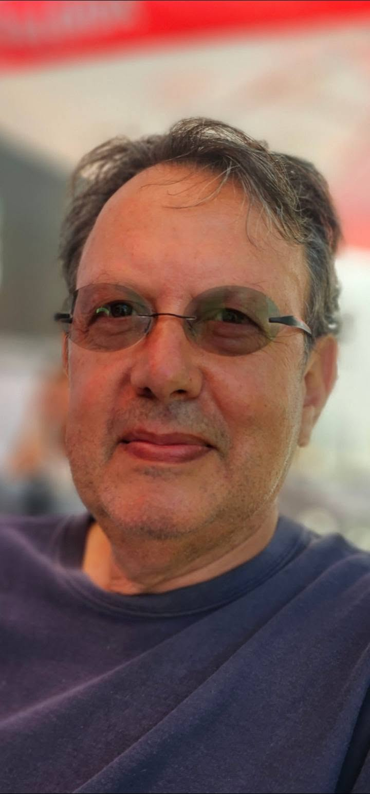
Χαμογελαστός, όπως τον θυμόμαστε. Από το άρθρο του Tinos LIVE TV, πηγή: δημόσια ανάρτηση της οικογένειας.
Καθηγητής στο Τμήμα Φωτογραφίας του Πανεπιστημίου Δυτικής Αττικής από το 1989, πρόεδρος της Ελληνικής Φωτογραφικής Εταιρείας και της Διεθνούς Ομοσπονδίας Φωτογραφικών Φεστιβάλ, με 30 ατομικές εκθέσεις και 24 βιβλία. Με το υπέρυθρο φιλμ του έδειξε την Τήνο και τους περιστεριώνες της όπως δεν τους είχαμε ξαναδεί, και με τις αεροφωτογραφίες του τη σύστησε «από ψηλά» στους επισκέπτες της.
Έφυγε από τη ζωή το πρωί της Τρίτης 20 Οκτωβρίου 2026, σε ηλικία 66 ετών. Η εξόδιος ακολουθία τελέστηκε το Σάββατο 24 Οκτωβρίου 2026, στη 1 το μεσημέρι, στον Ιερό Ναό Αγίου Ελευθερίου στη Χώρα της Τήνου.
Εδώ έχουν συγκεντρωθεί τα κείμενα που γράφτηκαν γι’ αυτόν στο Facebook από τις 20 έως τις 24 Οκτωβρίου 2026, όπως τα κοινοποίησαν κυρίως οι κόρες του, η Κατερίνα και η Ευαγγελία, μαζί με τις φωτογραφίες που συνόδευαν κάθε ανάρτηση και τα σχόλια που αφέθηκαν από κάτω.
Tinos LIVE TV20 Οκτωβρίου 2026κοινοποίηση από Κατερίνα και Ευαγγελία
«Βαριά απώλεια για την Τήνο μας»
Έφυγε σήμερα το πρωί από τη ζωή, σε ηλικία 66 ετών, ο Τήνιος φωτογράφος και καθηγητής Αριστείδης Κοντογεώργης. Συγκλονισμένοι όλοι εδώ στο Tinos LIVE TV. Βαριά απώλεια για την Τήνο μας.
Καθηγητής στο Τμήμα Φωτογραφίας του Πανεπιστημίου Δυτικής Αττικής από το 1989, πρόεδρος της Ελληνικής Φωτογραφικής Εταιρείας και της Διεθνούς Ομοσπονδίας Φωτογραφικών Φεστιβάλ, με 30 ατομικές εκθέσεις και 24 βιβλία. Με το υπέρυθρο φιλμ του έδειξε την Τήνο και τους περιστεριώνες της όπως δεν τους είχαμε ξαναδεί, και με τον οδηγό του, γεμάτο αεροφωτογραφίες, τη σύστησε στους επισκέπτες της.
Θερμά συλλυπητήρια στην οικογένειά του. Ας είναι ελαφρύ το χώμα που θα τον σκεπάσει. Καλό ταξίδι, Αριστείδη.
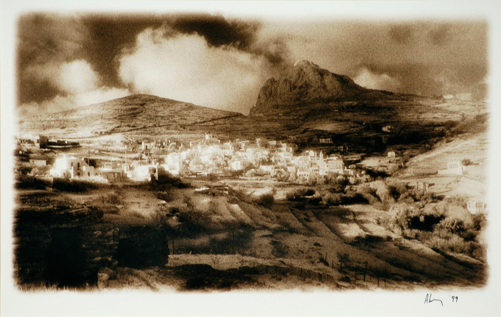
«Τήνος», από τη σειρά «Υπέρυθρη φωτογραφία»· έργο του στη συλλογή του Μουσείου Σύγχρονης Τέχνης Φλώρινας.
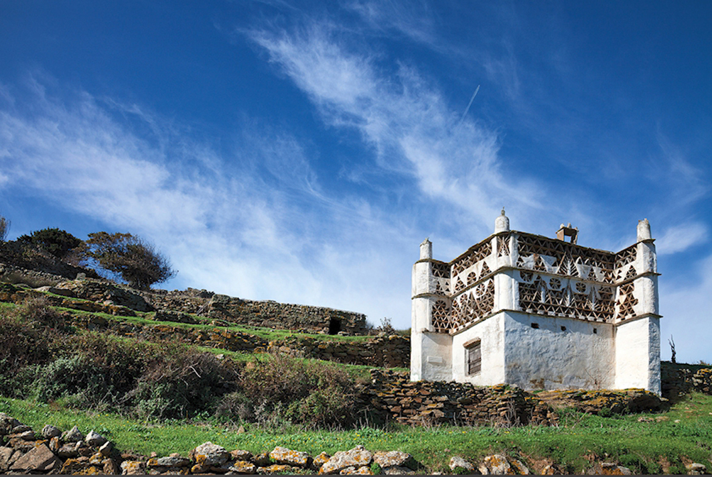
Περιστεριώνας στην Τήνο.
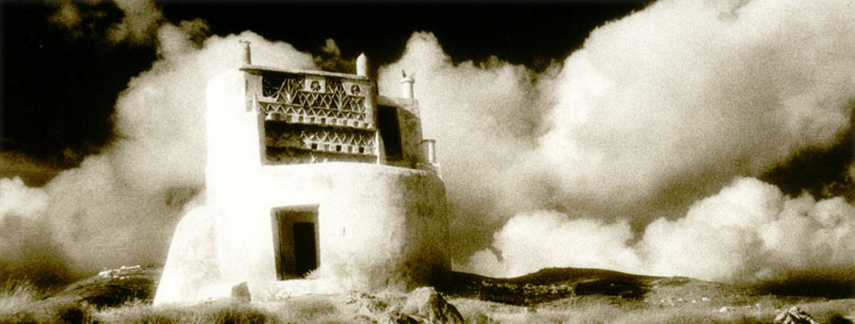
Περιστεριώνας της Τήνου στο φως του υπέρυθρου φιλμ.
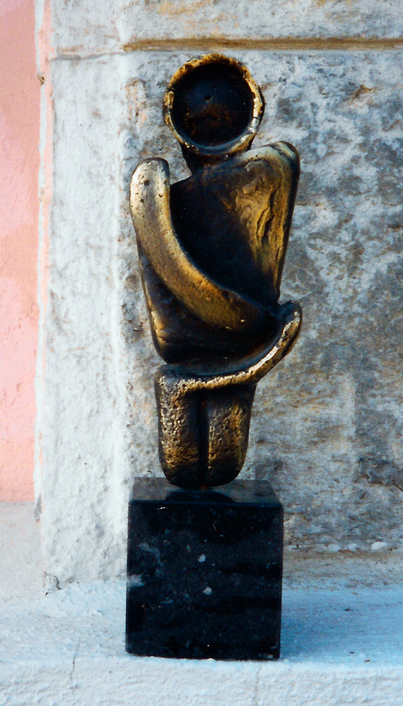
«Ειδώλιο ΙΙ»· ήταν και γλύπτης. Μουσείο Σύγχρονης Τέχνης Φλώρινας.
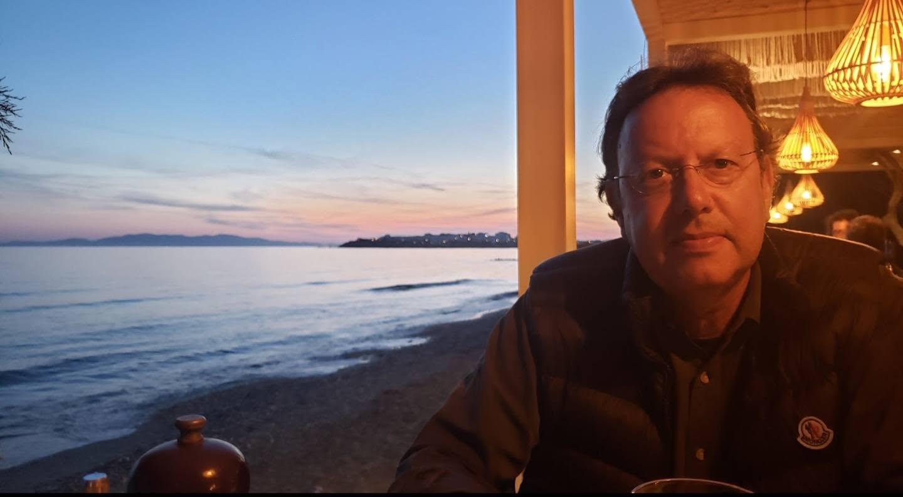
Στο σούρουπο, δίπλα στη θάλασσα.
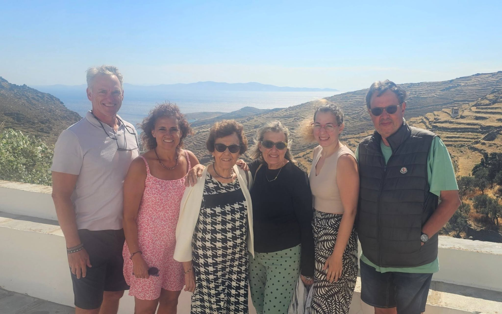
Με τους δικούς του, με φόντο τις πεζούλες της Τήνου.Χαμογελαστός, όπως τον θυμόμαστε.
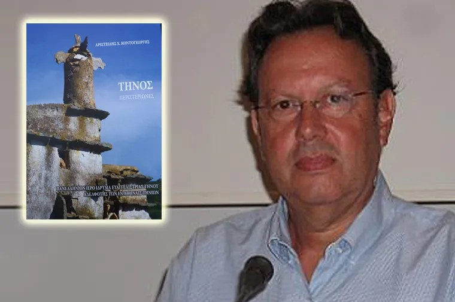
Με το λεύκωμά του για την Τήνο. Πηγή: imaginistes.
Άρθρο: «Έφυγε ο Αριστείδης Κοντογεώργης: ο Τήνιος φωτογράφος που έδειξε το νησί μας αλλιώς, μέσα από το υπέρυθρο φιλμ και “εξ ουρανού”» (tinoslive.tv, 20.10.2026). Οι φωτογραφίες είναι από το άρθρο· πηγές τους, κατά το Tinos LIVE TV: imaginistes, Μουσείο Σύγχρονης Τέχνης Φλώρινας και δημόσια ανάρτηση της οικογένειας.
190 αντιδράσεις · 22 σχόλια · 16 κοινοποιήσεις
Σχόλια (19)
Faethon GryparisΠολλά συλλυπητήρια στην οικογένεια! Μου είναι δύσκολο να το πιστέψω. Πολύ αγαπημένος φίλος, υπέροχο άτομο, καλλιτέχνης της φωτογραφίας!
Αλέκος ΦλωράκηςΣυγκλονισμένος... Ο φίλτατος Αριστείδης.... Ο Θεός να αναπαύσει την ψυχή του. Θερμά συλλυπητήρια στην οικογένειά του.
Babis KoulourasΣτη μνήμη του αγαπημένου μου φίλου μια από τις πολλές αναμνήσεις μου... Θα μείνει πάντα στις καρδιές όσων τον γνώρισαν από κοντά και πήραν κάτι από τη βαθιά του καρδιά... (με το βίντεο «Η Τήνος από ψηλά»)
Αγγελική ΓυφτογιάννηΠολύ κρίμα, τόσο νέος. Θερμά συλλυπητήρια στους οικείους του, ένας αξιόλογος άνθρωπος. Ορφάνεψε το νησί μας. ΚΑΛΟ ΤΟΥ ΤΑΞΙΔΙ ΣΤΗΝ ΑΙΩΝΙΟΤΗΤΑ!
Μαρία ΨάρρουΚαλό ταξίδι Αριστείδη... έφυγες αφήνοντας φτωχότερη την Τήνο... Συλλυπητήρια σε όλη την οικογένεια.
Josephine AmerΕιλικρινή συλλυπητήρια στους οικείους του!
Lia LazarouΘερμά συλλυπητήρια σε όλη την οικογένεια! Να είστε πάντα καλά να τον θυμάστε! Καλό παράδεισο!
Ευάγγελος ΠαπαγεωργίουΚαλό σου ταξίδι αγαπημένε μου φίλε Αριστείδη... συλλυπητήρια και κουράγιο στην οικογένεια...
Evaggelia Metaxa KiousiΚαλό ταξίδι στο Φως Αριστείδη, συλλυπητήρια στην οικογένειά σου.
Stelios BibirisΈνας εξαίρετος γείτονας στον Άγ. Φωκά έφυγε τόσο νωρίς, συλλυπητήρια στην οικογένειά του.
Matthaios AndriotisΘερμά συλλυπητήρια στην οικογένειά του.
Antonis MitsisΣυλλυπητήρια στην οικογένειά του και ας είναι πάντα στη μνήμη μας η παρουσία του και το υπέροχο έργο του.
Markos RigosΤα θερμά μας συλλυπητήρια σε όλη την οικογένεια! Καλό παράδεισο να έχει!
Ματθαίος-Μαρία ΚαρδαμίτσηΣυλλυπητήρια στην οικογένειά του!
Marinos PalamarisΤα συλλυπητήριά μου σε όλη την οικογένεια και τους οικείους του, κρίμα!
Maria PiliotopoulouΌμορφο δρόμο για την αιωνιότητα, καλέ μου συμμαθητή Αριστείδη.
Despoina KannidouΘερμά συλλυπητήρια στους οικείους του!
Zetta SantaΚαλό ταξίδι Αριστείδη!
Tinos Today20 Οκτωβρίου 2026κοινοποίηση από Ευαγγελία και από Tawfik Youssef στο προφίλ της Κατερίνας
«Σε ευχαριστούμε για όλα»
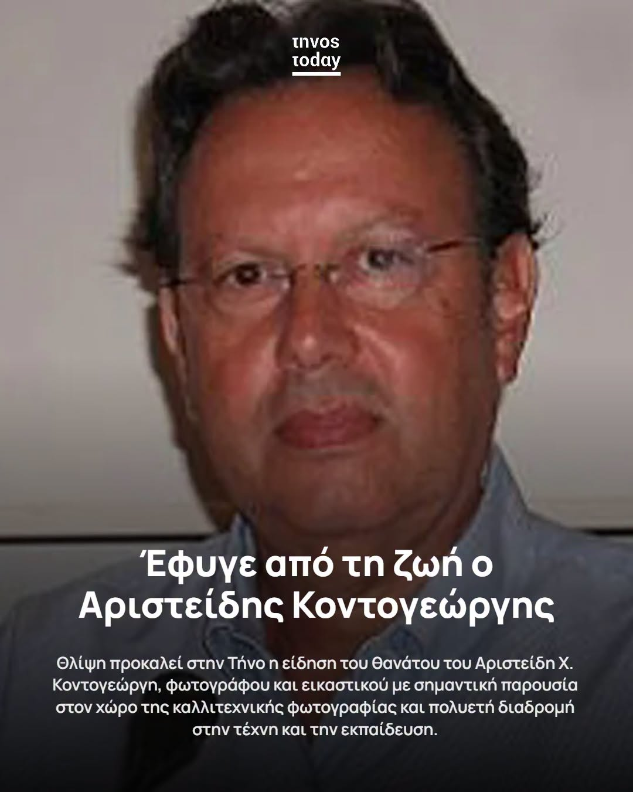
Για εμάς στο Tinos Today, ο Αριστείδης Κοντογεώργης ήταν ένας άνθρωπος που στάθηκε δίπλα μας από τα πρώτα βήματα της προσπάθειάς μας, αλλά και σε όλη τη μετέπειτα πορεία μας.
Τον ευχαριστούμε θερμά για όσα μας δίδαξε, για τη γνώση και την εμπειρία που μοιράστηκε μαζί μας, αλλά και για τις φωτογραφίες που μας εμπιστεύτηκε και διέθεσε στο Tinos Today.
Η προσφορά του και η στήριξή του αποτελούν ένα κομμάτι της δικής μας διαδρομής. Θα τον θυμόμαστε με εκτίμηση και ευγνωμοσύνη.
Καλό ταξίδι, Αριστείδη. Σε ευχαριστούμε για όλα.
Άρθρο: «Έφυγε από τη ζωή ο Αριστείδης Κοντογεώργης» (tinostoday.gr, 20.10.2026).
400 αντιδράσεις · 81 σχόλια · 11 κοινοποιήσεις
Σχόλια (81)
Viktoras ApiliotisΤο φωτογραφικό έργο του για την Τήνο σπουδαία πολιτισμική παρακαταθήκη. Θερμά συλλυπητήρια στην οικογένειά του.
Γεώργιος ΔεληγιάννηςΒαγγελίτσα δεν μπορώ, δεν βρίσκω λόγια να γράψω γι’ αυτό το θλιβερό θανατηφόρο και του δεύτερου Παιδιού Σου, Αριστείδη! Με την Αλεξ εκφράζουμε τα εγκάρδια Συλλυπητήριά μας και ευχόμαστε ο Θεός να σου δίνει Δύναμη, Κουράγιο και Παρηγοριά! Ας είναι Αιώνια Αναπαυμένος στον Ουράνιο Παράδεισό Του.
Αλέξανδρος ΧατζίρηςΘερμά συλλυπητήρια.
Stratis VidalisΘερμά συλλυπητήρια στην οικογένεια.
Manolis SohosΘερμά συλλυπητήρια στην οικογένειά του. Είμαι υπερήφανος που συνεργαστήκαμε στο σημαντικό εκδοτικό έργο Η ΤΗΝΟΣ ΤΟΥ ΧΘΕΣ ΚΑΙ ΤΟΥ ΣΗΜΕΡΑ!
Konstantinos VidalisΘΕΡΜΑ ΣΥΛΛΥΠΗΤΗΡΙΑ ΣΤΗΝ ΟΙΚΟΓΕΝΕΙΑ ΤΟΥ! ΣΥΓΚΛΟΝΙΣΜΕΝΟΣ ΑΠΟ ΤΗΝ ΑΠΩΛΕΙΑ ΤΟΥ ΚΑΛΟΥ ΜΟΥ ΦΙΛΟΥ. Η ΜΝΗΜΗ ΤΟΥ ΘΑ ΕΙΝΑΙ ΑΙΩΝΙΑ ΓΙΑ ΟΛΟ ΤΟ ΝΗΣΙ.
Αλέκος ΦλωράκηςΣυγκλονισμένος... Ο φίλτατος Αριστείδης.... Ο Θεός να αναπαύσει την ψυχή του. Θερμά συλλυπητήρια στην οικογένειά του.
Πέτρος ΤριαντάφυλλοςΘερμά συλλυπητήρια στην οικογένειά του... Αιωνία του η μνήμη.
Francesco StraticòΣυλλυπητήρια (στα ιταλικά).
Nikos XatzisΤα ειλικρινή μου συλλυπητήρια στην οικογένεια του Αριστείδη. Είχα μια πολύ καλή φιλική σχέση και συνεργάστηκα μαζί του σε σημαντικές εκδόσεις μέσω της Αδελφότητος των Τηνίων εν Αθήναις, με εκδοτικά φωτογραφικά έργα (άλμπουμ) όπως Η ΤΗΝΟΣ ΤΟΥ ’50, ΟΙ ΠΕΡΙΣΤΕΡΙΩΝΕΣ κ.ά. Ο Αριστείδης προσέφερε πολλά μέσα από το καλλιτεχνικό και φωτογραφικό του έργο, προβάλλοντας την Τήνο μέσα από τα έργα του. Ας είναι το ταξίδι του ήρεμο στην αγκαλιά των αγγέλων και η μνήμη του να παραμείνει στην αιωνιότητα. Καλό ταξίδι Αριστείδη.
Manthos SantorineosΜε μεγάλη θλίψη διαβάζω τα νέα για τον Αριστείδη, άλλον ένα άξιο καλλιτέχνη της Τήνου ο οποίος με τα ενδιαφέροντα καλλιτεχνικά και λαογραφικά φωτογραφικά βιβλία του έχει καταγράψει την Τήνο που χάνεται. Όπως και οι φωτογραφίες των βιβλίων σου, θα μείνεις στη μνήμη μας Αριστείδη. Θερμά συλλυπητήρια στην οικογένειά του.
Marietta LouvariΣυλλυπητήρια στην οικογένεια και τους οικείους του. Τέτοιοι άνθρωποι δε φεύγουν, αφήνουν για πάντα το έργο τους.
Φραγκίσκα ΣελέντηΤα ίχνη της ζωής του δεν θα σβηστούν ποτέ! Είναι τόσο φωτεινά! Αιώνια η μνήμη του! Δύναμη στους οικείους του για τη μεγάλη απώλεια! Ευγνώμονες!
Ελευθερία ΚαμολίνουΘερμά συλλυπητήρια.
Μίμης ΠέργαληςΔεν υπάρχουν λόγια. Θερμά συλλυπητήρια στην οικογένεια. Με την απώλεια του Αριστείδη η Τήνος έγινε φτωχότερη.
Ευάγγελος ΤζεπαπαδάκηςΘερμά συλλυπητήρια.
Artemis LiapiΘερμά συλλυπητήρια.
Konstantinos KafandarisΘερμά συλλυπητήρια στην οικογένειά του. Ένας τόσο δημιουργικός άνθρωπος!
Ιωσηφίνα ΦόνσουΘερμά συλλυπητήρια στην οικογένειά του. Καλό ταξίδι Αριστείδη, θα σε θυμάμαι πάντα.
Garifallia PlytaΕιλικρινή συλλυπητήρια! Αιώνια να βρίσκεται στη μνήμη του Θεού!
Γιάννης ΚανακάρηςΕιλικρινή συλλυπητήρια... Ο Χριστός μας να τον αναπαύει.
Antonis DelatollasΤα συλλυπητήριά μου στην οικογένεια.
Ευαγγελία Μινάρδου-ΑδάμουΘερμά συλλυπητήρια στην οικογένειά του, αιωνία η μνήμη του!
Frantzeska DasyraΜόνο λύπη και στενοχώρια για έναν τόσο άξιο και δημιουργικό άνθρωπο που λάτρευε το νησί μας! Καλό ταξίδι και καλή ανάπαυση, το έργο του μεγάλο και αξέχαστος! Θερμά συλλυπητήρια στην οικογένειά του!
Katerina Samara FilippousiΤα συλλυπητήριά μας.
Antoinette DiamatarisΚαλό παράδεισο.
Eleni Minnen-TigaΘερμά συλλυπητήρια σε όλη την οικογένεια.
Michael PlakotakisΕιλικρινή συλλυπητήρια σε όλη την οικογένεια.
Mariola GaitiΘερμά συλλυπητήρια στην οικογένειά του.
Maria VidaliΘερμά συλλυπητήρια στην οικογένειά του.
Fragkiskos AlvertisΘερμά συλλυπητήρια.
Aggeliki GiannitsiΘερμά συλλυπητήρια στην οικογένειά του.
Anna SiotouΘερμά συλλυπητήρια.
Μαργαρίτα ΦόνσουΣυλλυπητήρια στην οικογένειά του.
Zozefina FoskolouΘερμά συλλυπητήρια.
Markos RigosΤα θερμά μας συλλυπητήρια σε όλη την οικογένεια! Καλό παράδεισο να έχει!
Μαρία ΒελαλοπούλουΘερμά συλλυπητήρια στην οικογένειά του!! Καλό Παράδεισο!!
Marianna DesypriΤα θερμά συλλυπητήρια σε όλη την οικογένεια.
Mixalis SuranisΘερμά συλλυπητήρια στην οικογένεια.
Κατερίνα ΚλαυδιανούΘερμά συλλυπητήρια.
Αγγελική ΓυφτογιάννηΘερμά συλλυπητήρια στην οικογένειά του, καλό του ταξίδι στο ΦΩΣ. Λυπήθηκα πάρα πολύ!
Konstantina GavrilouΘερμά συλλυπητήρια στην οικογένειά του. Αιωνία η μνήμη του!
Giannis KaleodisΘερμά συλλυπητήρια σε όλη την οικογένεια.
Μαρούλα ΔεσύπρηΘερμά συλλυπητήρια στην οικογένειά του.
Maria KrommydaΘερμά συλλυπητήρια στην οικογένειά του.
Δημήτρης ΜπάσιοςΤα θερμά μου συλλυπητήρια στην οικογένειά του!!
Το Σοκάκι ΤήνοςΤα θερμά μου συλλυπητήρια σε όλη την οικογένεια.
Marizan PrelorentzouΘερμά συλλυπητήρια.
Ζωή ΝώεΗ Παναγιά να σου δίνει παρηγοριά στον χαμό του παιδιού σου. Ο Θεός να σου δίνει κουράγιο, Βαγγελίτσα, και καλό Παράδεισο να έχει ο Αριστείδης σου! Συλλυπητήρια από την οικογένειά μας!
Βιβή ΔούκαΚαλό παράδεισο.
Μαρία Καρδαμίτση ΖαλώνηΆγγελοι στην ψυχούλα του.
Lakis KamolinosΤα ειλικρινή μου συλλυπητήρια στην οικογένειά του.
Ανδρέας Καφετζής20 Οκτωβρίου 2026κοινοποίηση από Κατερίνα
«Ο μεγάλος Τηνιακός»
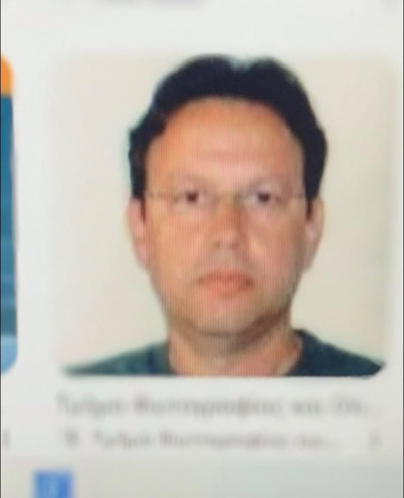
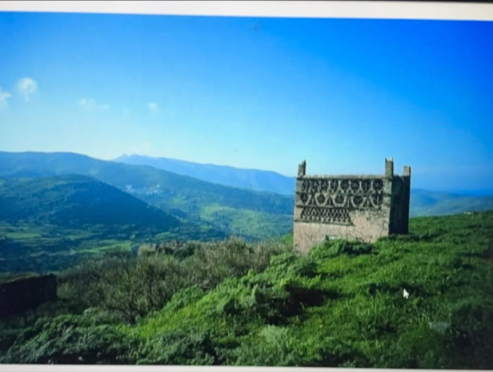
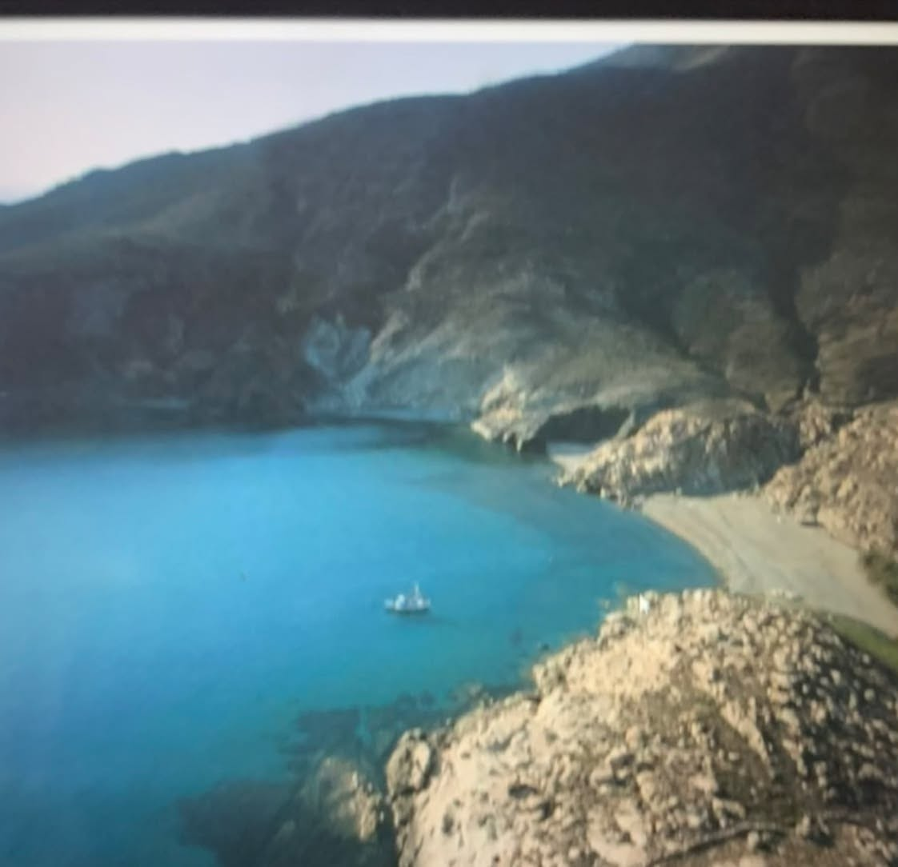
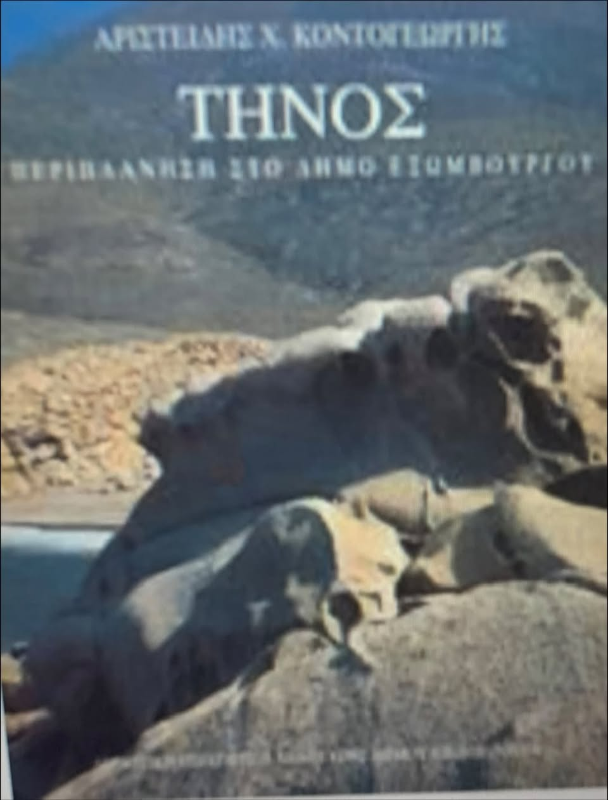
ΑΡΙΣΤΕΙΔΗΣ ΚΟΝΤΟΓΙΩΡΓΗΣ, Ο ΜΕΓΑΛΟΣ ΤΗΝΙΑΚΟΣ.
Ο Αριστειδάκος, ο κουμπάρος μας, ένας ευγενής άνθρωπος. Πέταξε στους ουρανούς σήμερα για να φωτογραφίζει τον κόσμο τούτο, την Τήνο πρώτα απ’ όλα, χωρίς να χρειάζεται ελικόπτερα και drones. Στις τρεις κυρίες του, τη Νέλυ, την Κατερίνα και την Ευαγγελία, η μνήμη του Αριστείδη θα είναι σημείο αναφοράς γι’ αυτό που λέγανε «καλός καγαθός», το οποίο τείνει να εκλείψει σήμερα.
34 αντιδράσεις · 5 σχόλια · 1 κοινοποίηση
Σχόλια (5)
Aphrodite StratakiΟ Θεός να αναπαύει την ψυχούλα του! Συλλυπητήρια!
Marianna PaulidouΚαλό παράδεισο να έχει!
Ματίνα Παπαδοπούλου ΟργαντζήΣυλλυπητήρια!!!
Νίτσα ΜπαμπούραΣυλλυπητήρια.
Ρόνα ΚαπΚαλή του ανάπαυση!!!
Θέμης Ροδαμίτης20–21 Οκτωβρίου 2026κοινοποίηση από Κατερίνα και Ευαγγελία
«Ο άνθρωπος που με πρωτοέφερε στην Τήνο»
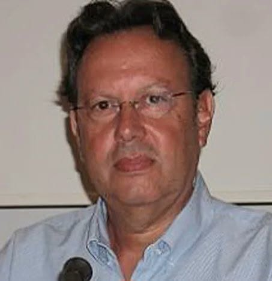
Έφυγε από τη ζωή ο πολυαγαπημένος μου φίλος ΑΡΙΣΤΕΙΔΗΣ ΚΟΝΤΟΓΙΩΡΓΗΣ. Ο άνθρωπος που με πρωτοέφερε στις αρχές του 2000 στην Τήνο και στο Φεστιβάλ.
Έχω νωπές τις μνήμες από το καλοκαίρι που πέρασα μαζί του και αυτό κάνει το πένθος ακόμα πιο σκοτεινό.
Ο ΑΡΙΣΤΕΙΔΗΣ ΚΟΝΤΟΓΙΩΡΓΗΣ υπήρξε άνθρωπος γενναιόδωρος, αλληλέγγυος και τρυφερός με τους ανθρώπους. Αγάπησε πολύ την Τήνο και προσέφερε πολλά στο νησί.
Τα θερμά μου συλλυπητήρια στην Ελένη και στις αγαπημένες του κόρες.
Θα τον θυμάμαι πάντα ως έναν ευγενικό και αγαπημένο φίλο.
216 αντιδράσεις · 17 σχόλια (η κοινοποίηση της Κατερίνας: 27 αντιδράσεις, της Ευαγγελίας: 14)
Σχόλια (17)
Gianni DellatolaΕίναι δύσκολο να περιγράψεις την προσωπικότητά του με λόγια.
Marinos PalamarisΓια την ιστορία, το μακρινό 1987 είχε επιμεληθεί τη διακόσμηση του all day cafe-bar «Φευγάτος», που ήταν για πολλά χρόνια σημείο αναφοράς στο νησί. Μόλις είχε έρθει από την Αμερική και είχε επίσης ανοίξει τα «Καλά καθούμενα», που και αυτό άφησε εποχή για την αισθητική και το στήσιμό του. Αιωνία του η μνήμη και τα συλλυπητήριά μου στην οικογένειά του και στους οικείους του!
Κωστούλα ΤωμαδάκηΤα ειλικρινή μου συλλυπητήρια.
Ευάγγελος ΠαπαγεωργίουΉταν ΕΞΑΙΡΕΤΙΚΟΣ...... Καλό του ταξίδι......
Vivi KitsouΣας εκφράζω τη λύπη μου. Είναι οδυνηρό να χάνεις αγαπημένους φίλους.
Katerina KavaliotiΠόσο συμφωνώ μαζί σας. Ένας εξαιρετικός άνθρωπος, με μια μεγάλη αγάπη για την Τήνο και τον πολιτισμό της.
Χρυσούλα ΙωαννίδουΚαλό παράδεισο να έχει. Συλλυπητήρια.
Peny XenakiΘέμη μου... Λυπάμαι πολύ...
Marialena AngelidouΤα θερμά μου συλλυπητήρια!
Konstantinos KafandarisΘερμά συλλυπητήρια!!
Eleni VeltsouΚαλό του ταξίδι!
Eudokia StatiriΣυλλυπητήρια Θέμη!
Sofia MichailidiΛυπάμαι με την απώλειά σου Θέμη μου! Κουράγιο....
Στην κοινοποίηση της Κατερίνας · Aristides KontogeorgisΟ αγαπημένος μας Αριστείδης είχε συνεχή προσφορά στο νησί, την οποία ούτε διαφήμιζε ούτε πρόβαλε ούτε προσπάθησε να εξαργυρώσει με οποιοδήποτε τρόπο.
Στην κοινοποίηση της Ευαγγελίας · Eva PantazatouΣυλλυπητήρια Ευαγγελία! Ο Θεός να αναπαύσει την ψυχή του!
Μπάμπης Κουλούρας20–21 Οκτωβρίου 2026με Tinos LIVE TV και 5 ακόμη · κοινοποίηση από Κατερίνα
«Ένας αληθινός ευπατρίδης της τέχνης και της ζωής»
Βίντεο: «Η Σύρος από ψηλά», παρουσίαση του φωτογραφικού λευκώματος (YouTube, πατήστε για αναπαραγωγή).
ΑΡΙΣΤΕΙΔΗΣ ΚΟΝΤΟΓΕΩΡΓΗΣ. Ένας αληθινός ευπατρίδης της τέχνης και της ζωής έφυγε πολύ νωρίς από κοντά μας. Πάντα όμως θα τον συναντάμε στις υπέροχες αναμνήσεις που μας άφησε, στις πολύτιμες φωτογραφίες του, στις στιγμές που αναρωτιόμαστε τι σημαίνει να είσαι αληθινός φίλος, αληθινός δάσκαλος, υπέροχος πατέρας, αληθινός ΑΝΘΡΩΠΟΣ. Τα πιο τρυφερά μου συναισθήματα στην οικογένειά του, που θα είναι πολύ υπερήφανη γι’ αυτόν...
22 αντιδράσεις · 2 σχόλια · 2 κοινοποιήσεις
Σχόλια (2)
Andriana VillaΑιώνια η μνήμη του.
Έφη ΧατζήΕυχαριστούμε.
Tawfik Youssef20 Οκτωβρίου 2026στο προφίλ της Κατερίνας, με την ανάρτηση του Tinos Today
«More than a friend... a brother»
Feeling just sad... more than a friend... a brother... just joined the stars without saying goodbye... We miss him already... All our heartfelt condolences to Eleni, Katerina, Evangelia, all the family and the people of Tinos.
13 αντιδράσεις · 6 σχόλια
Σχόλια (4)
Tawfik YoussefTomorrow Saturday 24/10 in Tinos we will say farewell to the last of his, far away, journey my beloved dad, the best dad in the world. The beloved Aristeidis Kontogeorgis to all of us. A man with many values, ethics, gentleness, calmness, willing to listen and help everyone. Irreplaceable in many places where he will be missed by all of us. (μετάφραση της ανάρτησης της Κατερίνας· στη συνέχεια αναδημοσίευσε στα αγγλικά και την αγγελία του Tinos LIVE TV)
Salwa HabibRip, God bless his soul.
Amy GuirguisMy condolences to you and the entire family. May God comfort you and all the family and give peace!
Salwa GuirgisMay his soul rest in peace, our condolence to you and his family.
Χρήστος Πιπίνης20–21 Οκτωβρίου 2026imaginistes.org · κοινοποίηση από Ευαγγελία
Στη μνήμη του αγαπημένου μας φίλου και συμπολίτη, Αριστείδη Κοντογεώργη, που μας αποχαιρέτησε πρόσφατα.
Σειρά στους «Μπραχαμιώτες καλλιτέχνες» παίρνει σήμερα ο Αριστείδης Κοντογεώργης, ένας εκ των κορυφαίων Ελλήνων φωτογράφων. Με τον Αριστείδη γνωριστήκαμε στην έκδοση του Λευκώματος του Αγ. Δημητρίου του Β. Καρδάση, όταν προέκυψε η ανάγκη να «διασώσουμε» μερικά παλιά κτίσματα του Μπραχαμίου με τον φωτογραφικό φακό και ζητήσαμε φυσικά τη βοήθειά του, όπου και δέχθηκε με ιδιαίτερη χαρά και προθυμία. Κατάφερε λοιπόν να αποτυπώσει εξαιρετικά στο βιβλίο μερικά από τα λίγα εναπομείναντα παλαιά σπίτια της περιοχής, αφού δεν «μπορούμε» να τα διασώσουμε στην πραγματικότητα.
Ο Αριστείδης δεν είναι γέννημα, είναι όμως θρέμμα της συνοικίας μας, επειδή εδώ και πολλά χρόνια ρίζωσε στον τόπο μας, έκανε οικογένεια και μοιράζεται πλέον μαζί μας τις κοινές αγωνίες και βιώνει καθημερινά τις ελλείψεις και τα προβλήματα της συνοικίας που ζει αυτός και η οικογένειά του.
Ο Αριστείδης Κοντογεώργης είναι ένας ευγενέστατος, ιδιαίτερα ζεστός, χωρίς καμία έπαρση χαρακτήρας, που σε κερδίζει με την αμεσότητα των τρόπων και της συμπεριφοράς του. Πρόκειται για σπουδαίο φωτογράφο, συγγραφέα, με πολλές εκθέσεις, διεθνή αναγνώριση και καθηγητική εμπειρία.
Ο Αριστείδης παραμένει άγνωστος στο Μπραχάμι, επειδή ουδέποτε κάποιος αρμόδιος του Δήμου τού πρότεινε μιας μορφής συνεργασία, κάποια έκθεση με έργα του ή μια εκδήλωση όπου θα τιμηθεί η προσφορά του. Δεν συζητάμε φυσικά και για αξιοποίηση της καθηγητικής του εμπειρίας με μια πιθανή ίδρυση ενός φωτογραφικού δημοτικού εργαστηρίου. Δεν είναι άλλωστε ούτε ο πρώτος ούτε ο τελευταίος που αγνοείται από τον Δήμο.
Αναδημοσίευση, στη μνήμη του, του κειμένου του Χρήστου Πιπίνη από το imaginistes.org (πρώτη δημοσίευση 21.4.2013, αναδημοσίευση 17.11.2023). Το άρθρο συνοδεύεται από σύντομο βιογραφικό και από μια φωτογραφία του με περιστεριώνα της Τήνου.
10 αντιδράσεις · 12 κοινοποιήσεις · η κοινοποίηση της Ευαγγελίας: 26 αντιδράσεις
Αδελφότητα των εν Αθήναις Τηνίων21 Οκτωβρίου 2026μέσω Tinos Today · κοινοποίηση από Κατερίνα και Ευαγγελία
«Έφυγε εξ ουρανού» για το μεγάλο ταξίδι ο δικός μας Αριστείδης
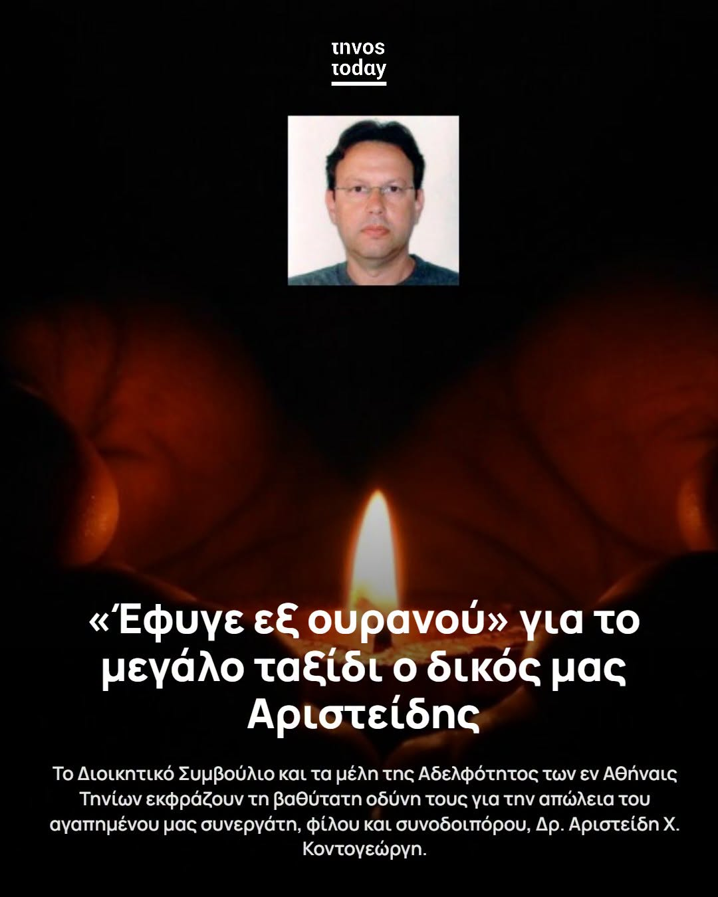
Το Διοικητικό Συμβούλιο και τα μέλη της Αδελφότητος των εν Αθήναις Τηνίων εκφράζουν τη βαθύτατη οδύνη τους για την απώλεια του αγαπημένου μας συνεργάτη, φίλου και συνοδοιπόρου, Δρ. Αριστείδη Χ. Κοντογεώργη.
Ο Αριστείδης δεν ήταν απλώς ένας καταξιωμένος επιστήμονας και Αναπληρωτής Καθηγητής του Πανεπιστημίου Δυτικής Αττικής. Ήταν ένας άνθρωπος που κουβαλούσε την Τήνο βαθιά μέσα στην ψυχή του. Με τον φωτογραφικό του φακό κατάφερε να «αιχμαλωτίσει» το φως, τις πέτρες, τους περιστεριώνες και τις θάλασσες του νησιού μας, χαρίζοντάς μας μια ανεκτίμητη παρακαταθήκη. Η συμβολή του στις εκδόσεις και το πολιτιστικό έργο της Αδελφότητάς μας υπήρξε καθοριστική και ανιδιοτελής.
Το κενό που αφήνει πίσω του στην τέχνη, την εκπαίδευση και την τηνιακή κοινότητα είναι δυσαναπλήρωτο. Θα τον θυμόμαστε πάντα για το ήθος, την ευγένεια και την αστείρευτη δημιουργικότητά του.
Εκφράζουμε τα ειλικρινή και θερμά μας συλλυπητήρια στην οικογένεια και τους οικείους του. Καλό ταξίδι στο φως, Αριστείδη. Η Τήνος σου θα σε θυμάται πάντα μέσα από τις εικόνες που της χάρισες.
Άρθρο: «“Έφυγε εξ ουρανού” για το μεγάλο ταξίδι ο δικός μας Αριστείδης» (tinostoday.gr, 21.10.2026).
230 αντιδράσεις · 16 σχόλια · 10 κοινοποιήσεις
Σχόλια (15)
Πέτρος ΤριαντάφυλλοςΘερμά συλλυπητήρια στην οικογένειά του... Αιωνία του η μνήμη.
Elisavet KalabalikiΚαλό ταξίδι στο φως! Θερμά συλλυπητήρια στην οικογένειά του.
Λυδία Ιωαννίδου ΜουζάκαΑιωνία του η μνήμη. Καλό Παράδεισο να έχει. Θερμά συλλυπητήρια στους οικείους του.
Korre MariaΚαλό παράδεισο! Συλλυπητήρια στην οικογένειά του!
Eleni KrikelliΘερμά συλλυπητήρια στην οικογένεια.
Aggeliki KondylaΘερμά συλλυπητήρια στην οικογένειά του!!
Λαμπρινή ΑσημομύτηΘερμά συλλυπητήρια στην οικογένειά του.
Ευαγγελία ΑθηναίουΚαλό παράδεισο.
Γιώργος ΜέληςΚαλό παράδεισο.
Πηνελόπη ΤριγώνηΘερμά συλλυπητήρια στην οικογένειά του.
Michael SakatisΚαλό Παράδεισο.
Ζωή ΝώεΚαλό Παράδεισο. Θερμά συλλυπητήρια στην οικογένειά του!!!!
Evaggelia DesipriΘερμά συλλυπητήρια.
Μαρία Καρδαμίτση ΖαλώνηΆγγελοι στην ψυχούλα του.
Alexandra Karavelatzis(αντίδραση χωρίς κείμενο)
Ευαγγελία Κοντογεώργη21 Οκτωβρίου 2026
«Γλυκέ μου μπαμπά»
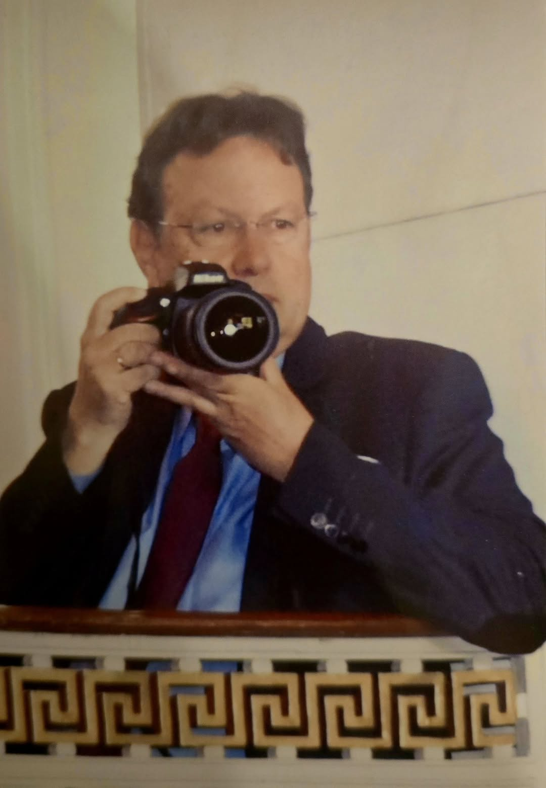
Γλυκέ μου μπαμπά ή αλλιώς μπαμπάκα όπως σε φωνάζαμε χαϊδευτικά, δεν έχω λόγια να περιγράψω όλα όσα κρύβω στην ψυχή μου σήμερα. Μου ράγισε η καρδιά και το κενό που άφησες φεύγοντας φαντάζει αξεπέραστο. Έγιναν όλα τόσο ξαφνικά. Μισώ τον τρόπο με τον οποίο η ζωή μας παίζει παιχνίδια και κάθε φορά μας αιφνιδιάζει ακόμα περισσότερο.
Κι όμως δεν μπορώ παρά να είμαι ευγνώμων για τον χρόνο που περάσαμε μαζί όλα αυτά τα χρόνια και ιδιαίτερα αυτές τις τελευταίες μέρες, γεμάτες με τόσες στιγμές αγωνίας, χαράς, θάρρους, υπομονής, αισιοδοξίας, λύπης, μα ποτέ δεν χάσαμε την ελπίδα μας ότι όλα θα πήγαιναν καλά! Δεν θα ξεχάσω ποτέ το βλέμμα σου τις ημέρες που όλο αγωνία με ρωτούσες το πρωί αν θα πάρεις σήμερα το φάρμακο, ούτε την έκφραση ανακούφισης που σε έκανε να κλείνεις τα μάτια με ασφάλεια όταν σου απαντούσα ναι! Δεν έχασες ποτέ τη δύναμη και το κουράγιο σου και συνέχισες να προσπαθείς και να πολεμάς μέχρι το τέλος!
Ήσουν για μένα η ήρεμη, γαλήνια φιγούρα στη ζωή μου, αυτή που με λίγα λόγια, σοφά και στοχευμένα, μπορούσε πάντα να μου δημιουργήσει ασφάλεια και να δώσει λύση σε κάθε πρόβλημά μου. Μας δίδαξες αρχές και αξίες με το ήθος και την αξιοπρέπειά σου σε κάθε δίλημμα!
Έκανες τόσα πολλά πράγματα μέσα σε τόσο λίγο χρόνο, σαν να ήξερες ότι θα φύγεις νωρίς!
Αγαπούσες τους φίλους και νοιαζόσουν τους γνωστούς σου σε Ελλάδα και σε όλο τον κόσμο. Είχες μια αγκαλιά έτοιμη να ζεστάνει ανθρώπους αλλά και ζώα που θα τύχαιναν στον δρόμο σου, πάντα με αθόρυβο και διακριτικό τρόπο.
Το χιούμορ σου ήταν ευφυές και μοναδικό! Δεν ήταν τυχαίο άλλωστε που κάθε φορά που κάποιος σε ρωτούσε «πώς, αφού έχεις τέτοιο ταλέντο στη ζωγραφική, εσύ ασχολείσαι με τη φωτογραφία», απαντούσες αυτοσαρκαζόμενος: «είναι χαρακτηριστικό των τεμπέληδων, με ένα κουμπί βγαίνει η εικόνα που θα χρειαζόταν ώρες ολόκληρες να ζωγραφίσει κανείς».
Αγαπούσες πολύ τη δουλειά σου και ενδιαφερόσουν αληθινά για τους φοιτητές σου! Έστειλες στο εξωτερικό με Erasmus περισσότερους φοιτητές από όσους παρακολουθούσαν διαλέξεις στην Ελλάδα!
Λάτρευες την Τήνο και προσπαθούσες με τον τρόπο σου να συμβάλεις ώστε να διασωθεί η παράδοση και ο αυθεντικός της χαρακτήρας!
Σου άρεσε να ταξιδεύεις και να θαυμάζεις τις ομορφιές κάθε τόπου, ενώ είχες έναν μοναδικό τρόπο να δημιουργείς αληθινές σχέσεις με ανθρώπους από κάθε γωνιά της γης!
Μα πάνω από όλα αγαπούσες πολύ την οικογένειά σου! Φρόντιζες εμένα, την Κατερίνα και τη μαμά, αλλά και τη μαμά και την αδερφή σου, και συνέχισες να το κάνεις ακόμα και από το νοσοκομείο!
Μπαμπά μου, ήμουν πάντοτε περήφανη για σένα! Σε αγαπώ πολύ και μου λείπεις. Καλό ταξίδι μπαμπάκα!
Η εξόδιος ακολουθία θα πραγματοποιηθεί το Σάββατο 24 Οκτωβρίου στον Ιερό Ναό Αγίου Ελευθερίου στη Χώρα της Τήνου, στη 1 μ.μ.
299 αντιδράσεις · 109 σχόλια · 8 κοινοποιήσεις
Σχόλια (109)
Maria SkandaliΘερμά συλλυπητήρια Ευαγγελία.
Nikitas PaschalisΘερμά συλλυπητήρια, να είστε πάντα καλά να τον θυμάστε.
Michail PavlidisΘερμά συλλυπητήρια! Ζωή σε εσάς!
Βάσω ΝαφΣυλλυπητήρια Ευαγγελία, καλή δύναμη.
Katy ChouΣυλλυπητήρια Ευαγγελία, να τον θυμάστε με αγάπη.
Spartakos IordanidisΤα συλλυπητήριά μου. Πολύ στενάχωρο και λυπηρό. Καλό Παράδεισο να έχει και δύναμη σε σας να αντέξετε.
Betty TzianoudakiΘερμά συλλυπητήρια Ευαγγελία μου! Καλό Παράδεισο στον μπαμπάκα σου.
Λίτσα ΟικονόμουΘερμά συλλυπητήρια, να τον θυμάστε πάντα με αγάπη.
Stella PelekaΘερμά συλλυπητήρια Ευαγγελία μου!!!
Tonia FragkoyliaΣυλλυπητήρια Ευαγγελία μου.
Fani Stravoula KaneloglouΕυαγγελία μου συλλυπητήρια... Να ζήσετε να τον θυμάστε...
Βασίλης ΜαστοράκηςΕυαγγελία μου, καλό παράδεισο στον μπαμπά σου, να έχεις πάντα την αγάπη του και το παράδειγμά του για οδηγό σου.
Rania KarabogiaΛυπάμαι πολύ, Ευαγγελία μου! Συλλυπητήρια και κουράγιο... Θα ζει πάντα μέσα από εσάς...
Στεφανία ΣυροπούλουΣυλλυπητήρια Ευαγγελία μου, να έχετε την ευχή του.
Katerina KolliaΣυλλυπητήρια Ευαγγελία μου.
Κωνσταντίνα ΜελισσουργούΣυλλυπητήρια Ευαγγελία.
Γιώργος ΚατσαγούνοςΤα συλλυπητήριά μου, να είσαι καλά να τον θυμάσαι.
Katerina KakouΘερμά συλλυπητήρια Ευαγγελία μου.
Δημήτρης ΚουτσιαύτηςΣυλλυπητήρια. Να ζήσετε να τον θυμάστε.
Vasiliki NtouniΓλυκό μου κορίτσι, να σας δίνει πάντα δύναμη η ανάμνηση και η ευχή του. Τα ειλικρινή μου συλλυπητήρια...
Boulougari EleniΣυλλυπητήρια κοριτσάκι μου!
Eleni GoliaΘερμά συλλυπητήρια Ευαγγελία μου, να ζήσετε να τον θυμάστε με αγάπη!
Μαρίνα ΠαγανέληΘερμά συλλυπητήρια Ευαγγελία μου, να έχετε την ευχή του.
Τζούλια ΕυστρατίουΘερμά συλλυπητήρια, καλό πέρασμα στο φως!!
Stefania KotzabasakiΘερμά συλλυπητήρια, να είστε καλά να τον θυμάστε Ευαγγελία μου!
Άννα ΣάββαρηΘερμά συλλυπητήρια! Να τον θυμόμαστε πάντα Ευαγγελία!
Vaso IakovakiΘερμά συλλυπητήρια Ευαγγελία μου!! Να είστε πάντα καλά και να τον θυμόσαστε με αγάπη! Πολύ λυπάμαι πραγματικά... μεγάλη απώλεια...
Katerina KontinopoulouΘερμά συλλυπητήρια Ευαγγελία μου! Καλή ανάπαυση στην ψυχούλα του! Να ζήσετε να τον θυμόσαστε!
Gosia Margo KoszykI’m very sorry for your loss, Evangelia.
Ειρήνη ΕυθυμίουΘερμά συλλυπητήρια Ευαγγελία μου! Καλό Παράδεισο στον μπαμπάκα σου. Να τον θυμάστε πάντα με αγάπη.
Lia LazarouΘερμά συλλυπητήρια σε όλη την οικογένεια! Να είστε πάντα καλά να τον θυμάστε! Καλό παράδεισο!
Lefteris ZemelisΣυλλυπητήρια και δύναμη σε όλους σας!!
Irini MalefakiΘερμά συλλυπητήρια, να τον θυμάστε με αγάπη.
Γεωργία ΔύρλαΕυαγγελία μου, τα θερμά μου συλλυπητήρια για την απώλειά σου. Δεν υπάρχουν λόγια να απαλύνουν τον πόνο σου. Εύχομαι να τον θυμάσαι πάντα με αγάπη.
Maria LianouΘερμά συλλυπητήρια Ευαγγελία.
Natasa LoukeriΝα είστε καλά να τον θυμάστε με αγάπη.
Aggeliki TzamtziΔυστυχώς οι καλοί άνθρωποι γίνονται από νωρίς άγγελοι!
Katerina VelalopΣυλλυπητήρια! Η ευχή του πάντα να σας συντροφεύει!!!
Valadis AgosΕιλικρινά συλλυπητήρια, δεν έχω λόγια.
Marilena RigouΣυλλυπητήρια Ευαγγελία μου. Να ζήσετε να τον θυμόσαστε... Είναι πολύ δύσκολες οι στιγμές αυτές, δυστυχώς δεν έχουν νόημα τα λόγια... Κουράγιο σε όλους σας!!
Ilia IliopoulouΕυαγγελία μου, θερμά συλλυπητήρια για τον αξιολάτρευτο πατερούλη σου!! Το κενό που θα σου αφήσει η παρουσία του θα το γεμίσεις με τις αναμνήσεις σου και την αγάπη του, που θα σου τη δίνει ακόμα και από εκεί που θα είναι τώρα!! Έτσι γίνεται... θα το καταλάβεις με τον καιρό!! Τα συλλυπητήριά μου και στη μαμά σου και την Κατερίνα!!!
Eva PantazatouΣυλλυπητήρια! Ο Θεός να τον αναπαύσει!
Sofia SideriΣυλλυπητήρια Ευαγγελία μου. Να ζήσεις να τον θυμάσαι!
Anthi SotirianakouΘερμά συλλυπητήρια…
Taxiarhoula AvgoustidiΣυλλυπητήρια, να ζείτε να τον θυμόμαστε.
Emmeleia KaskouraΣυλλυπητήρια Ευαγγελία μου… θα είναι πάντα κοντά σου…
Μάγδα ΣτρατούληΚορίτσι μου αγαπημένο, να έχετε την ευχή του…. συλλυπητήρια...
Aggeliki DouligeriΣυλλυπητήρια Ευαγγελία μου! Καλό παράδεισο στον μπαμπά σου. Θα ζει πάντα μέσα από εσάς!
Maria PopotaΣυλλυπητήρια Ευαγγελία μου!!!
Μάνια ΚαγιώργηΛυπάμαι πολύ. Κουράγιο σε όλους σας. Να είστε καλά να τον θυμάστε.
Nick KtistakisΘερμά συλλυπητήρια Ευαγγελία! Να είστε πάντα καλά να τον θυμάστε!
Stelina KarkalemiΘερμά συλλυπητήρια Ευαγγελία μου. Η αγάπη του πάντα θα είναι μαζί σας.
Alkisti PanagiotouΣυλλυπητήρια Ευαγγελία μου.
Kouzi LabriniΘερμά συλλυπητήρια...
Marianna MoustakaΣυλλυπητήρια Ευαγγελία μου.
Eleni GeorgakopoulouΣυλλυπητήρια Ευαγγελία μου, ζωή σε εσάς. Να αναπαύεται ειρηνικά και να έχετε την ευχή του.
Antonis MitsisΣυλλυπητήρια από καρδιάς για έναν τόσο αξιόλογο άνθρωπο, φίλο και συγχωριανό μου. Ας μείνει στη μνήμη μας χαμογελαστός και γεμάτος αισιοδοξία και ελπίδα για όλους και για όλα.
Natassa SampaniΤα θερμά μου συλλυπητήρια!!!
Χάρης ΚαραχάλιοςΣυλλυπητήρια, Ευαγγελία!
Πηνελόπη ΑλεξοπούλουΘερμά συλλυπητήρια Ευαγγελία μου... Να ζήσετε να τον θυμάστε...
Savia PittokopitouΣυλλυπητήρια Ευαγγελία μου, να ζήσετε να τον θυμάστε!
Ευθυμία ΚαζαντζήΤα θερμά μου συλλυπητήρια στην οικογένειά του.
Μαρία ΚαδόγλουΤα θερμά μου συλλυπητήρια. Να έχετε την ευχή του!!!
Argiris RountisΘερμά συλλυπητήρια Ευαγγελία.
Dora BlionaΘερμά συλλυπητήρια...
Valentina MalofiyI am without words! Our deepest condolences. Honored to have known him, we all loved him so much. Prayers of peace and comfort to you all. I am so sorry.
Polina XanthakiΘερμά συλλυπητήρια κορίτσι μου!
Νάσια ΓουδεσίδουΣυλλυπητήρια, να είστε γερές να τον θυμάστε!
Dimitrislena FoukaΣυλλυπητήρια γλυκό μου πλάσμα!!! Να είστε καλά να τον θυμάστε!
Κατερίνα ΓούναρηΓλυκιά μου Ευαγγελία, πόσο όμορφα λόγια, πόσο με συγκίνησες με αυτά που έγραψες για τον μπαμπάκα σας! Να είναι καλά εκεί που πάει! Σε φιλώ!
Georgia KotoulaΣυλλυπητήρια Ευαγγελία μου.
Marie Devereux CurranYou’ve said this so well. Your father was like family to us. I said to Bob yesterday that he had such a warm and unique smile, that just made us feel special. He will be missed terribly.
Filomeni TinosΗ ευχή του να σας συντροφεύει κορίτσια. Καλό Παράδεισο να έχει η ψυχούλα του.
Themis RodamitisΕυαγγελία, συγκινητικά τα λόγια σου. Ο μπαμπάκας σου ήταν ένας ξεχωριστός κι όμορφος άνθρωπος. Προσωπικά του οφείλω πολλά... Ναι, η Τήνος δεν θα είναι στα καλύτερά της. Κάποιοι άνθρωποι δίνουν αυτό το πολύτιμο που ανοίγει δρόμο για τους άλλους. Τέτοια χαρακτηριστικά στοιχεία είχε ο Αριστείδης. Αυτή η αναχώρηση αφήνει ερωτήματα που κινητοποιούν τη συνείδηση. Ας σκεφτεί ο καθένας τη δική του στάση στα κοινωνικά θέματα. Ο Αριστείδης αγάπησε και αγαπήθηκε. Αυτό κρατώ.
Paul GrapsasΤα θερμά μου συλλυπητήρια Ευαγγελία. Ήταν και πολύ καλός καθηγητής. Καλό Παράδεισο να έχει.
Elena HasanllariΣυλλυπητήρια Ευαγγελία μου.
Γιώργος ΠαρασκευάςΘερμά συλλυπητήρια, Ευαγγελία, σε εσένα, στην Κατερίνα, στη μητέρα σας και σε όλη την οικογένεια. Ο μπαμπάς σου, ο Αριστείδης, ήταν ένας ευγενικός άνθρωπος και καμάρι για όλους εμάς τους Τηνιακούς. Με τον φακό του έδειξε τον τόπο μας όπως λίγοι τον είδαν. Η Τήνος θα τον θυμάται πάντα. Ας είναι ελαφρύ το χώμα της Τήνου που θα τον σκεπάσει. Καλό ταξίδι, Αριστείδη.
Αλεξάνδρα ΠούλιαΛυπάμαι πολύ, Ευαγγελία μου. Η ψυχή του θα είναι πάντα κοντά σας. Κουράγιο, κορίτσι μου.
Kostas KaraiskosΘερμά συλλυπητήρια, η ευχή του να σας συνοδεύει πάντα....
Βασιλική ΒουρλήΤην ευχή του να ’χεις, αγαπημένη μου Ευαγγελία….
Minasyan MariamΣυλλυπητήρια Ευαγγελία μου.
Konstantinos AlvertisΣυλλυπητήρια! Ζωή σε εσάς!
Theodoros N. SergentanisΘερμά συλλυπητήρια, πολυαγαπημένη μας Ευαγγελία. Να ζήσετε να τον θυμάστε.
Nestoras RigosΜε τον πατέρα σας μάς συνέδεε μια φιλία ετών, βασισμένη στην αμοιβαία εκτίμηση. Όταν πριν τέσσερα χρόνια του είπα ότι θα έχει φοιτήτρια την κόρη μου στο ΠΑΔΑ, χάρηκε τόσο πολύ και μου υποσχέθηκε ότι θα την έχει σαν κόρη του. Αυτό το έπραξε στο ακέραιο μέχρι ο Θεός να τον πάρει κοντά του. Μόνο ευγνώμων είμαι στον πατέρα σας και βαθύτατα θλιμμένος.
Πέτρος ΤριαντάφυλλοςΘερμά συλλυπητήρια... Να έχετε την ευχή του.
Anna PrelorentzouΘερμά συλλυπητήρια!!!!
Victor PalamarisΤα θερμά μου συλλυπητήρια σε όλη την οικογένειά σας. Να είσαστε όλοι πάντα καλά και να τον θυμόσαστε με αγάπη.
Nikos MagiesΘερμά συλλυπητήρια, να είσθε καλά να τον θυμάστε.
Ζέτα ΚουτσογεωργοπούλουΘερμά συλλυπητήρια Εύα μου, σε όλη την οικογένεια! Να ζήσετε να τον θυμάστε!
Afroditi TripylaΕυαγγελία μου θερμά συλλυπητήρια!! Καλή δύναμη και κουράγιο σε όλους σας!!
Michail SpanosΣυλλυπητήρια μέσα απ’ την καρδιά μου Ευαγγελία.
Andreas DafnisΣυλλυπητήρια Ευαγγελία μου, να είστε γεροί να τον θυμάστε!
Elena KorakianitiΣυλλυπητήρια Ευαγγελία! Ζωή σε εσάς.
Κωνσταντίνα ΣυλίκουΠόσο λυπάμαι.... ειλικρινή συλλυπητήρια..... να σε συντροφεύει η ευχή του σε όλη σου τη ζωή..... καλό ταξίδι στο Φως............
Maria PapasΘερμά συλλυπητήρια! Καλό ταξίδι!
Antonia Plyta HomeΝα έχετε την ευχή του!! Τα συλλυπητήριά μου σε όλη την οικογένειά σας! Ήταν ξεχωριστός άνθρωπος, γεμάτος από ευγένεια.
Katerina VakalopoulouΛυπάμαι πολύ για την απώλειά σας Ευαγγελία μου, αλλά παράλληλα χαίρομαι πολύ να διαβάζω αυτό το κείμενο, γεμάτο αγάπη, εκτίμηση και γνήσιο θαυμασμό για τον μπαμπά σου. Ακούγεται πραγματικά υπέροχος. Ζωή σε σας. Να ζείτε με την έμπνευση που έδωσε και θα ζει πάντα κι αυτός μέσα από εσάς. Μια μεγάλη αγκαλιά.
Harris PressasΟ συνάδελφος Αριστείδης ξεχώριζε για την ευγενική του φύση, την ηρεμία του και την αμείωτη διάθεση για προσφορά. Η πριν την ώρα του αναχώρηση αφήνει κενό. Μεγάλο! Να είστε καλά να τον θυμάστε και να τον τιμάτε!
Tinos LIVE TV21 Οκτωβρίου 2026κοινοποίηση από Κατερίνα
Από το βίντεο της παρουσίασης, Βυζαντινό Μουσείο Αθηνών, 6 Ιουνίου 2005 (πατήστε για το βίντεο στο YouTube).
«Η Τήνος από ψηλά»: ο Αριστείδης Κοντογεώργης, το 2005, στην παρουσίαση του βιβλίου του στο Βυζαντινό Μουσείο της Αθήνας. Ένας φίλος του μάς έστειλε το βίντεο «στη μνήμη του αγαπημένου του φίλου». Το μοιραζόμαστε κι εμείς, ως ελάχιστο φόρο τιμής σε έναν άνθρωπο που έδειξε την Τήνο μας από ψηλά. Καλό ταξίδι, Αριστείδη.
Το βίντεο έστειλε ο Μπάμπης Κουλούρας. Άρθρο: «“Η Τήνος από ψηλά”: ο Αριστείδης Κοντογεώργης παρουσιάζει το βιβλίο του στο Βυζαντινό Μουσείο» (tinoslive.tv, 21.10.2026).
23 αντιδράσεις · 3 σχόλια · 2 κοινοποιήσεις
Σχόλια (1)
Βλάσσης ΛεβαντίνοςΘερμά συλλυπητήρια.
Tinos LIVE TV · Tinos Today21–22 Οκτωβρίου 2026κοινοποίηση από Κατερίνα και Ευαγγελία
Το τελευταίο αντίο: Σάββατο 24 Οκτωβρίου, στη 1 το μεσημέρι
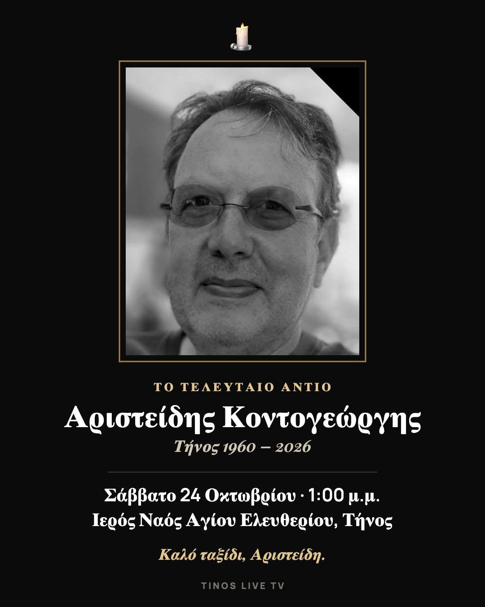
Tinos LIVE TV, 21.10.2026
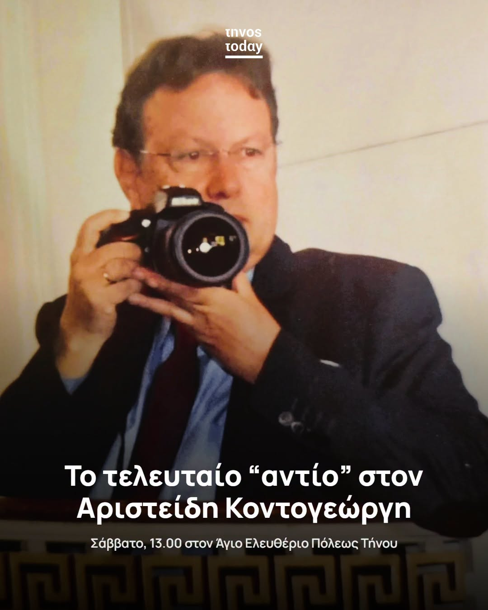
Tinos Today, 22.10.2026
Tinos LIVE TV: Το Σάββατο 24 Οκτωβρίου, στη 1 το μεσημέρι, στον Ιερό Ναό Αγίου Ελευθερίου, η Τήνος λέει το τελευταίο αντίο στον Αριστείδη Κοντογεώργη. Ο φωτογράφος που έδειξε το νησί μας «από ψηλά» και μέσα από το υπέρυθρο φιλμ γυρίζει στον τόπο του, για να αναπαυθεί στη γη που τόσο αγάπησε. Θερμά συλλυπητήρια στην οικογένεια και στους οικείους του. Καλό ταξίδι, Αριστείδη.
Tinos Today: Η εξόδιος ακολουθία του Αριστείδη Κοντογεώργη θα τελεστεί το Σάββατο, στις 13:00, στον Ιερό Ναό Αγίου Ελευθερίου, στην πόλη της Τήνου. Συγγενείς, φίλοι και άνθρωποι που τον γνώρισαν μέσα από την προσωπική, καλλιτεχνική και επαγγελματική του διαδρομή θα έχουν την ευκαιρία να τον αποχαιρετήσουν για τελευταία φορά. Ο Αριστείδης Κοντογεώργης αφήνει πίσω του το έργο και τη δημιουργική του παρακαταθήκη, καθώς και τις αναμνήσεις που μοιράστηκε με τους ανθρώπους του τόπου του.
Tinos LIVE TV: 103 αντιδράσεις · 9 σχόλια · 11 κοινοποιήσεις — Tinos Today: 25 αντιδράσεις στην κοινοποίηση της Κατερίνας
Σχόλια (7)
Mary VergopoulouΤα πιο θερμά μου συλλυπητήρια στην οικογένειά του και κυρίως στη γυναίκα του Ελένη. Παλιά μου φίλη και καλή συνάδελφο.
Λυμπέρης ΑννούσηςΤα θερμά μου συλλυπητήρια στην οικογένεια. Καλό παράδεισο να έχει.
Γιάννης Αντίνοος ΠαλαμάρηςΟ Θεός να αναπαύσει την ψυχούλα του. Τα θερμά συλλυπητήρια στους οικείους του!!
Μάνθος ΒίλλαςΑιώνια η μνήμη του.
Antonios FoskolosΘερμά συλλυπητήρια στους δικούς του.
Mary HanoussiΔεν υπάρχουν λόγια.
Maria KalamariΘερμά συλλυπητήρια στους δικούς του.
Παντελής Αρμάος22 Οκτωβρίου 2026κοινοποίηση από Ευαγγελία
«Φίλε Αριστείδη, με βαθιά θλίψη σε αποχαιρετώ»
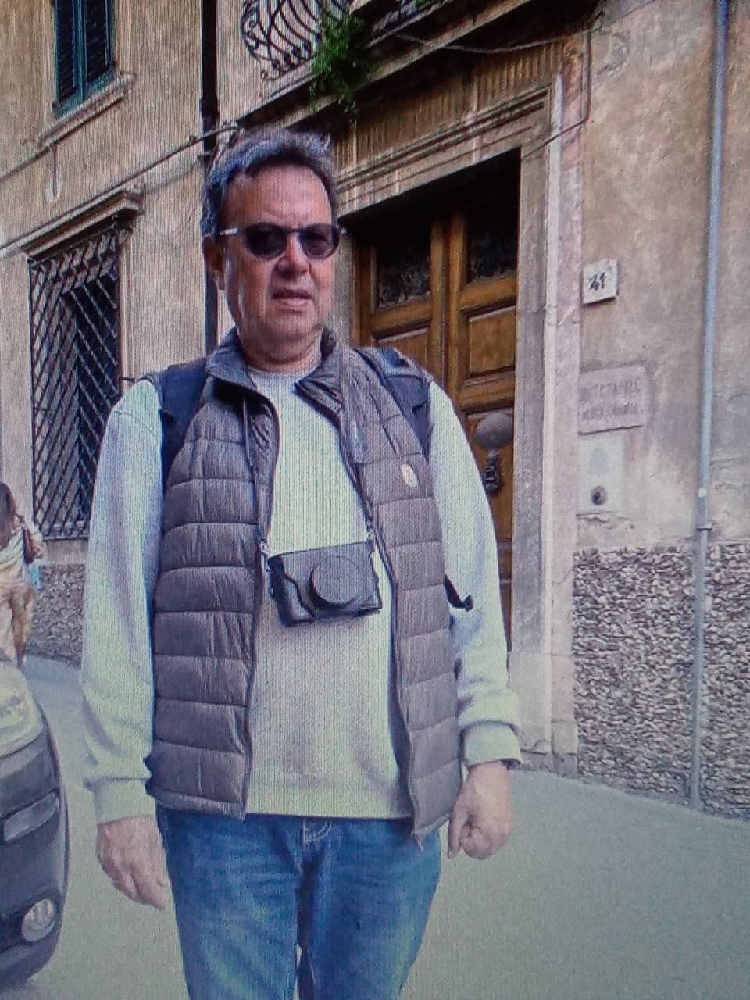
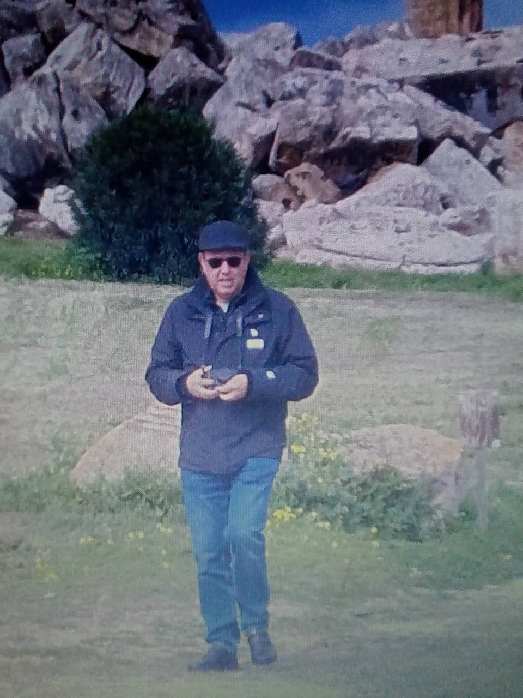
Φίλε Αριστείδη, με βαθιά θλίψη σε αποχαιρετώ. Μου είναι δύσκολο να καταλάβω και να πιστέψω την ξαφνική αναχώρησή σου, «για μακρινά ταξίδια μόνος σου», κατά την έκφραση ενημέρωσής μου από την αγαπημένη σου σύζυγο και εκλεκτή φίλη και συνάδελφό μου στο ΥΠΕΘΟ, Ελένη Δαγρέ.
Σαν… χθες ήταν που σε γνώρισα, συμπατριώτη, στις επισκέψεις σου στην Ελένη στο Υπουργείο πριν από πολλά χρόνια. Έκτοτε η φιλία μας γνήσια, σταθερή και ειλικρινής, και μετά την αφυπηρέτησή μου και την αυτοδιοικητική ενασχόλησή μου την τελευταία 15ετία και εγκατάστασή μου στο νησί, πιο δυνατή, με συχνότερη εκ του σύνεγγυς επικοινωνία.
Αγαπητέ Αριστείδη, η Τήνος θα σε θυμάται για την πλούσια προσφορά σου στον πολιτισμό, στην αποτύπωση της γνήσιας και αυθεντικής εικόνας της (που σταδιακά και σταθερά χάνεται), με τα τόσα λευκώματα που εκπόνησες, και την προβολή της στα πέρατα του κόσμου (Κίνα, Ουκρανία κ.λπ.).
Σ’ ευχαριστώ, φίλε, για ό,τι έκανες για τον τόπο μας, με πράξεις και δημιουργικές δράσεις, με ταπεινότητα και ανιδιοτέλεια.
Μας έχει συγκλονίσει η απρόσμενη φυγή σου, ενώ είχαμε συνεννοηθεί να βρεθούμε μετά την καλοκαιρινή αιχμή. Έτσι όπως άλλωστε επιδιώκαμε και πραγματοποιούσαμε, σε αραιά χρονικά διαστήματα, με γόνιμες συζητήσεις, ανταλλαγές απόψεων και διαπιστώσεων για διάφορα θέματα του νησιού μας, για χαρές, λύπες, αχάριστες και υποκριτικές συμπεριφορές!
Αριστείδη, θα σε θυμάμαι με αγάπη και εκτίμηση για την καλοσύνη σου, τον μειλίχιο χαρακτήρα σου, την ειλικρίνειά σου.
Αγαπητή Ελένη, φίλη και συναδέλφισσα, από καρδιάς τις ευχές μας σε σένα και στα κορίτσια σας για κουράγιο και δύναμη για την απώλεια του Αριστείδη.
Φίλε Αριστείδη, καλό κατευόδιο, καλή ανάπαυση.
103 αντιδράσεις · 8 σχόλια · 5 κοινοποιήσεις
Σχόλια (8)
Mary VergopoulouΓαμώτο. Τα πιο ειλικρινή μου συλλυπητήρια στην Ελένη και τα κορίτσια τους. Πόσες συζητήσεις κάναμε, τότε, με το Ελενάκι για τα αγόρια μας. Είχαν και πρωτότυπα ονόματα... Αριστείδης, Βαρθολομαίος. Θυμάσαι Παντελή; Δημητρούλι; Εσείς τα ζήσατε από κοντά. Μεγάλες οι απώλειες.
Eleni DagreΚαι έφυγαν νικημένοι από τον ίδιο εχθρό... Πόσες φορές δεν σκέφτηκα τον Βαρθολομαίο αυτές τις μέρες στο νοσοκομείο. Καπετάνιοι και οι δύο, που δεν άντεξαν στις φουρτούνες...
Mary VergopoulouΑχ βρε Ελενάκι, τι να πω τέτοιες ώρες. Θα σε πάρω τηλέφωνο όταν περάσει η μεγάλη μπόρα. Οι σκέψεις μου κοντά σας. Έχουμε ζήσει τόσα...
Anthi PaterakiΟ ένας νεανικός φίλος, η άλλη φίλη και συνάδελφος. Δεν αρκούν τα λόγια να περιγράψουν το σοκ που νιώσαμε. Κουράγιο στην Ελένη και στις νεαρές γιατρίνες!!!
Ρίζου ΔήμητραΠω πω... κι εμένα σαν χτες μου φαίνεται που ερχόταν στο γραφείο στην Ελένη. Καλό του ταξίδι, και συλλυπητήρια στην Ελένη και τα κορίτσια τους.
Τούλα ΑντωνίουΚαλό ταξίδι στον Αριστείδη, καλό παράδεισο. Πολλά συλλυπητήρια στην αγαπημένη Ελένη Δαγρέ.
Tonia RentziΤα συλλυπητήριά μου Ελένη μου. Καλό ταξίδι. Αιωνία του η μνήμη.
Νίκος ΣυρμαλένιοςΘερμά συλλυπητήρια στην οικογένεια!!!
Ίδρυμα Τηνιακού Πολιτισμού22 Οκτωβρίου 2026itip.gr · μέσω Tinos LIVE TV, κοινοποίηση από Κατερίνα
«Λόγοι μνήμης και ευγνωμοσύνης σε δύο δημιουργούς»
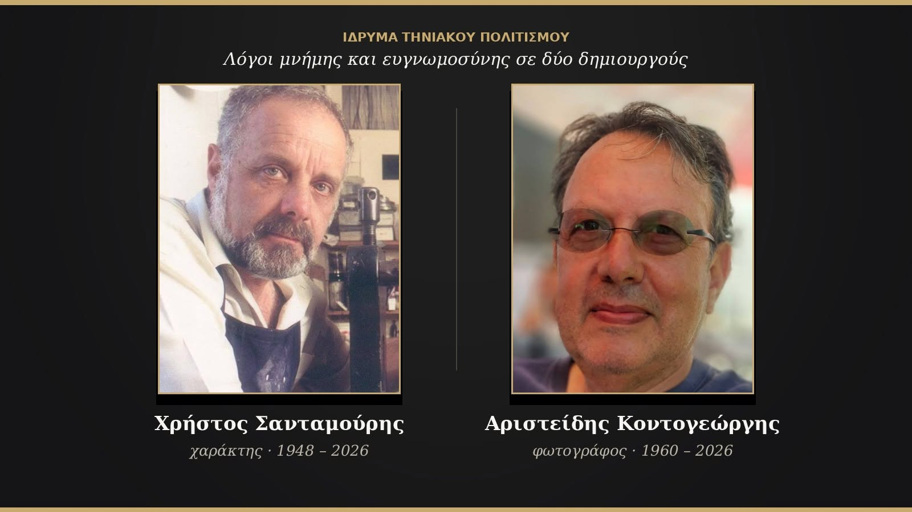
Στο Ίδρυμα Τηνιακού Πολιτισμού η απώλεια ενός ντόπιου καλλιτέχνη και συνεργάτη του Ιδρύματος προκαλεί σε όλους εμάς, το Διοικητικό Συμβούλιο και το Προσωπικό του, διπλή θλίψη: και για τον άνθρωπο που αποχωριζόμαστε και για τον συνεργάτη και βοηθό που αποτελούσε και ελπίζουμε να συνεχίσει να αποτελεί πηγή έμπνευσης. Και ο εφετινός Οκτώβρης ήταν ιδιαιτέρως σκληρός για την οικογένεια των εικαστικών της Τήνου, αφού θρηνεί την απώλεια δύο καταξιωμένων μελών της: του Χρήστου Σανταμούρη και του Αριστείδη Κοντογιώργη.
Ο Αριστείδης Κοντογεώργης γεννήθηκε στην Τήνο το 1960. Σπούδασε Καλές Τέχνες στο Northern Illinois University στις Η.Π.Α., καθώς και Ιστορία της Τέχνης και Πολιτικές Επιστήμες. Ήταν κάτοχος Διδακτορικού Διπλώματος στην Τεχνική και Διαχείριση των Εφαρμοσμένων Τεχνών. Δίδαξε στο Τμήμα Φωτογραφίας και Οπτικοακουστικών Τεχνών του ΤΕΙ Αθήνας από το 1989, και στη συνέχεια ως Αναπληρωτής Καθηγητής στο αντίστοιχο τμήμα του Πα.Δ.Α. Έχει πραγματοποιήσει τριάντα ατομικές εκθέσεις φωτογραφίας στην Ελλάδα και το εξωτερικό και έχει δεκάδες συμμετοχές σε ομαδικές εκθέσεις στο εξωτερικό. Έχουν εκδοθεί είκοσι τέσσερα βιβλία και λευκώματά του και έχει συγγράψει πολυάριθμα άρθρα σε επιστημονικά περιοδικά. Ήταν μέλος του Επιμελητηρίου Εικαστικών Τεχνών Ελλάδος από το 1985, Πρόεδρος του Δ.Σ. της Ελληνικής Φωτογραφικής Εταιρείας από το 2005 και Πρόεδρος της Διεθνούς Ομοσπονδίας Φωτογραφικών Φεστιβάλ (IPFF) από το 2009.
Η συνεργασία του με το Ίδρυμα Τηνιακού Πολιτισμού ξεκίνησε από τα πρώτα χρόνια ίδρυσής του, με σειρά συνεδρίων, εκθέσεων και εκδόσεων. Το 2003 διοργάνωσε στο Ι.ΤΗ.Π., σε συνεργασία με την Ελληνική Φωτογραφική Εταιρεία, διεθνή συνάντηση φωτογράφων με θέμα την ιστορική, εθνογραφική και καλλιτεχνική φωτογραφία στην Ελλάδα του 20ού αιώνα, με δίγλωσση έκδοση των πρακτικών, έκθεση ελληνικής φωτογραφίας και φωτογράφηση της Τήνου. Το 2006 δάνεισε από το αρχείο του φωτογραφίες-καρτ ποστάλ των αφών Κολιού των αρχών του 20ού αιώνα, στο πλαίσιο της έκθεσης «Η Αφύπνιση». Το 2009 επιμελήθηκε την έκθεση «Η Ελληνική Φωτογραφία μέσα από το αρχείο της Ελληνικής Φωτογραφικής Εταιρείας» και τον κατάλογο που τη συνόδεψε. Το 2010 εξέθεσε 30 ασπρόμαυρες φωτογραφίες περιστεριώνων της Τήνου με τίτλο «Τήνος – Περιστεριώνες». Μία από αυτές δωρήθηκε στο Ι.ΤΗ.Π. και εκτίθεται στον 1ο όροφο, στο πλαίσιο της έκθεσης «Η Συνέχεια…». Το 2011 επιμελήθηκε την οργάνωση και υλοποίηση στο Ι.ΤΗ.Π. της έκθεσης φωτογραφίας έξι Κινέζων φωτογράφων «Memory of Saghay, China».
Ο Αριστείδης Κοντογεώργης δώρισε στο Ι.ΤΗ.Π. τη φωτογραφία «Εγκαταλειμμένος Περιστεριώνας» (2014), η οποία εκτίθεται επίσης στον 1ο όροφο, στο πλαίσιο της έκθεσης «Η Συνέχεια…». Ανταποκρινόταν δε σε κάθε αίτημά μας για χρήση φωτογραφιών του με εικόνες της Τήνου, και με ιδιαίτερη φροντίδα φιλοξενούσε καλλιτέχνες και επιμελητές εκθέσεων του Ιδρύματος.
Για τους δύο αυτούς εικαστικούς εκφράζουμε τη βαθιά μας ευγνωμοσύνη για την πολυετή και πολύτιμη συνεργασία μας. Προσευχόμαστε ο Κύριος να αναπαύει τις ψυχές τους και να χαρίζει στις οικογένειές τους την εξ ύψους παρηγορία.
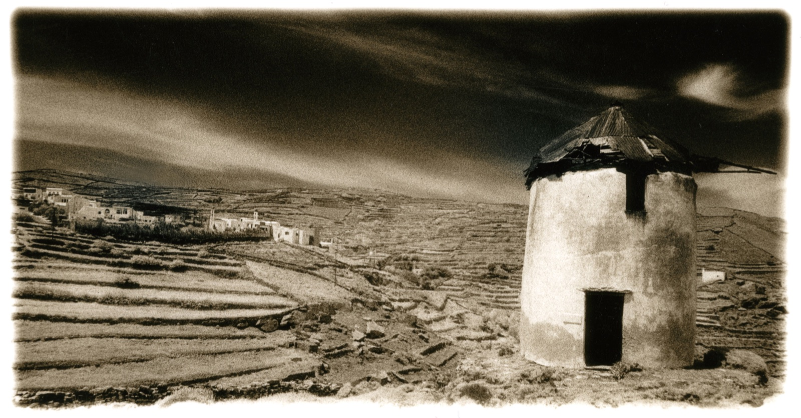
Η Τήνος με τον φακό του. Πηγή: itip.gr
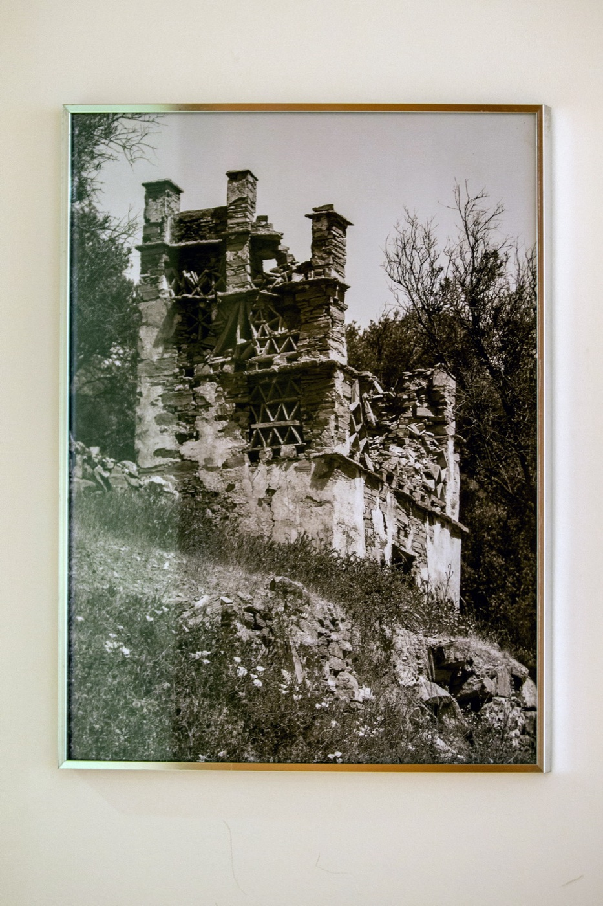
Φωτογραφία του στη μόνιμη έκθεση «Η Συνέχεια…». Πηγή: itip.gr
Το κείμενο αφορά και τον χαράκτη Χρήστο Σανταμούρη (1948–2026), που κηδεύτηκε στη Χώρα στις 6 Οκτωβρίου. Εδώ κρατήθηκαν η εισαγωγή, το μέρος για τον Αριστείδη και η κατακλείδα. Πλήρες κείμενο: «Λόγοι μνήμης και ευγνωμοσύνης σε δύο δημιουργούς» (itip.gr, 22.10.2026). Παρουσίαση από το Tinos LIVE TV στις 22.10.2026.
Αντώνης ΑσημομύτηςΚαλοί μου φίλοι και οι δύο, αιωνία η μνήμη τους.
Maria PiliotopoulouΜε τον Αριστείδη είμασταν συμμαθητές και με τον Χρήστο γείτονες!!! Αιώνια τους η μνήμη!!
Κατερίνα Κοντογεώργη23 Οκτωβρίου 2026
«Τον καλύτερο μπαμπάκα του κόσμου»
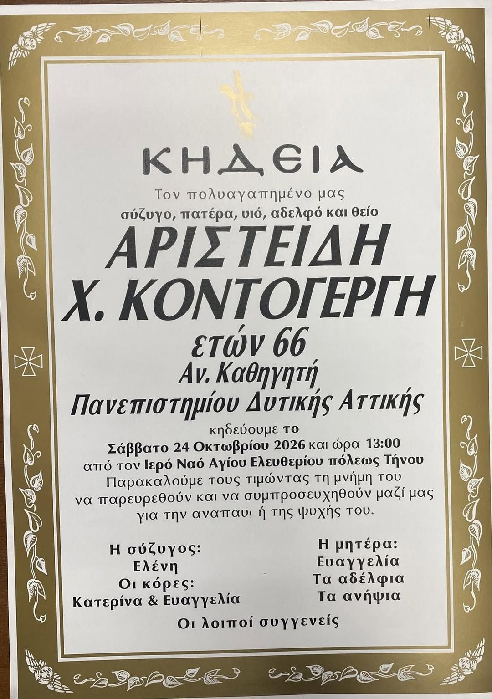
Αύριο Σάββατο 24/10 στην Τήνο αποχαιρετάμε για το τελευταίο του, μακρινό, ταξίδι τον πολυλατρεμένο μου μπαμπά, τον καλύτερο μπαμπάκα του κόσμου. Τον αγαπημένο σε όλους μας Αριστείδη Κοντογεώργη. Άνθρωπο με πολλές αξίες, ήθος, ευγένεια, ηρεμία, πρόθυμο να ακούσει και να βοηθήσει τους πάντες. Αναντικατάστατος σε πολλούς τομείς, που θα λείψει σε όλους μας.
98 αντιδράσεις · 38 σχόλια
Σχόλια (37)
Maria Sotirudi AtsalakiΤα θερμά μου συλλυπητήρια, καλό παράδεισο.
Maia AndonovaМоите дълбоки съболезнования, Катерина! Мир на душата му! (Τα βαθιά μου συλλυπητήρια, Κατερίνα! Ειρήνη στην ψυχή του!)
Gylian HalilovСъболезнования на цялото семейство. (Συλλυπητήρια σε όλη την οικογένεια.)
Ioannis Chatzigeorgiou Charoula AgapiouΣυλλυπητήρια. Καλό ταξίδι στο φως.
Themis RodamitisΕυγενής... συμπονετικός... Ένα από τα πιο ωραία χαμόγελα του κόσμου. Δεν μπορώ να είμαι στον αποχαιρετισμό καθώς είμαι σε ανάρρωση. Η σκέψη μου στην Ελένη, την Κατερίνα, την Ευαγγελία...
Tawfik YoussefEvery word is true. He will be always remembered as a man of a big heart, and he will be missed everywhere he used to be.
Marie Devereux CurranI am so incredibly sad for all of you. Your dad was such a gentle, kind person. Bob and I have said several times this week that he was just so welcoming to us. And his smile, it was the absolute best. All of our love to you.
Sofia StavroulakiΛυπάμαι πολύ Κατερίνα μου.
Νίκη ΚρίκηΟ Θεός να τον αναπαύσει.
Γιάννης ΝικολόπουλοςΣυλλυπητήρια.
Christina BourbouliΘερμά συλλυπητήρια Κατερίνα μου, να ζήσετε να τον θυμάστε με αγάπη.
Tina MavromaraΟ μπαμπάς είναι ένας θησαυρός που θα κουβαλάτε πάντα μέσα σας. Θα σας δίνει δύναμη, θα σας πλημμυρίζει αγάπη και γαλήνη. Είστε τυχερές που είχατε πατέρα τον Αριστείδη, και εμείς τυχεροί όσοι τον γνωρίσαμε, τον αγαπήσαμε και μοιραστήκαμε μαζί του ιδέες και συναισθήματα. Θα είμαστε αύριο κοντά σας.
Μαρία ΤενεκετζήΘερμά συλλυπητήρια, Κατερίνα! Τα λόγια είναι φτωχά τέτοιες στιγμές. Καλό παράδεισο να έχει ο πατερούλης σου…
Georgia PataridouΘερμά συλλυπητήρια Κατερίνα, να τον θυμάστε πάντα!
Σίντι ΣίντιΤα θερμά μου συλλυπητήρια Κατερίνα μου!! Να είστε πάντα καλά και να τον θυμάστε με αγάπη.
Elina StefanouΤα ειλικρινή μας συλλυπητήρια... Καλό Παράδεισο!!!
Bob CurranI offer my deepest condolences. I feel fortunate to have known him for the short time that I did. I will miss him greatly.
Anna Maria RoussouΤα θερμά μου συλλυπητήρια! Καλό παράδεισο. Κατερίνα, Ευαγγελία, να ζήσετε να τον θυμάστε. Θα σας προσέχει από εκεί ψηλά και θα είναι δίπλα σας, σαν φύλακας άγγελος.
Konstantina KatsikaΘερμά συλλυπητήρια.... Να ζήσετε να τον θυμόμαστε πάντα... κουράγιο και δύναμη.
Μάγδα-Βασίλης Πιπέρογλου-ΜόρφηΘερμά συλλυπητήρια.
Tinos Today23 Οκτωβρίου 2026κοινοποίηση από Κατερίνα και Ευαγγελία
Βαθύτατη θλίψη για τον Σύλλογο Καλλιτεχνών Εικαστικών Τήνου
Ο Αριστείδης, προσφιλής με εκείνη την ιδιαίτερη, ζεστή ματιά, ταξιδιάρης αγκαλιά με το φακό του, ωραίος οικογενειάρχης, καλοσυνάτος, ιδιαίτερα αγαπητός στην κοινωνία της Τήνου, δημιουργικός μέσα και έξω από τα όριά της.
Άρθρο: «Βαθύτατη θλίψη για τον Σύλλογο Καλλιτεχνών Εικαστικών Τήνου» (tinostoday.gr, 23.10.2026).
Κοινοποίηση της Κατερίνας: 13 αντιδράσεις · της Ευαγγελίας: 10
Εμποροεπαγγελματικός & Βιοτεχνικός Σύλλογος Τήνου23 Οκτωβρίου 2026μέσω Tinos Today · κοινοποίηση από Κατερίνα και Ευαγγελία
«Αριστείδη, σ’ ευχαριστούμε…»
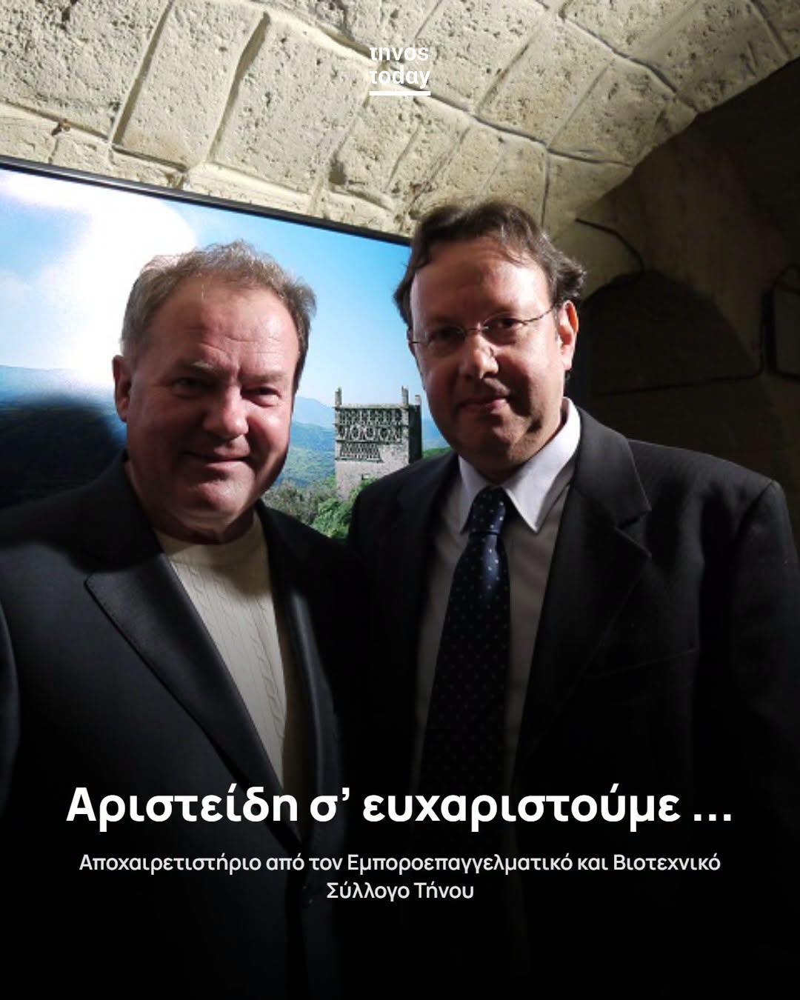
Για την ανιδιοτελή αγάπη που είχες για το νησί μας.
Γιατί μέσα από την ξεχωριστή ματιά σου και το αστείρευτο ταλέντο σου γνώρισες το νησί μας και σε αυτούς που δεν ήξεραν την πραγματική Τήνο, την Τήνο του φωτός, της τέχνης, του πολιτισμού, των περιστεριώνων, της θάλασσας, των ανθρώπων της.
Για τις γνώσεις, τις εμπειρίες και την ανιδιοτελή υποστήριξη που πρόσφερες απλόχερα στους φοιτητές σου.
Για την εμπιστοσύνη που έδειξες στον Σύλλογό μας, παραχωρώντας τα πνευματικά δικαιώματα πολλών φωτογραφιών σου και δίνοντάς μας το δικαίωμα να τις χρησιμοποιούμε με σκοπό την ανάδειξη και την προβολή του νησιού μας.
Για την πολύτιμη βοήθειά σου όταν ο Εμποροεπαγγελματικός & Βιοτεχνικός Σύλλογος Τήνου μαζί με τον Δήμο Τήνου παρουσίασε τον Μάρτιο του 2012 την Τήνο στο Νικολάγιεφ και στην Οδησσό της Ουκρανίας.
Για την πολύτιμη αρωγή σου στη διοργάνωση του Tinos Running Experience.
Θερμά συλλυπητήρια στην οικογένειά σου. Καλό ταξίδι!!!
Με εκτίμηση, Το Δ.Σ. του Εμποροεπαγγελματικού & Βιοτεχνικού Συλλόγου Τήνου
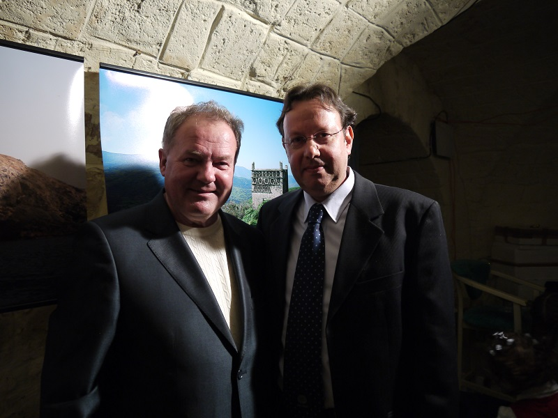
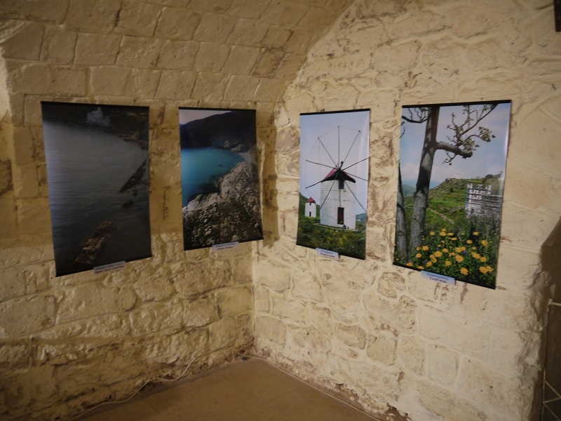
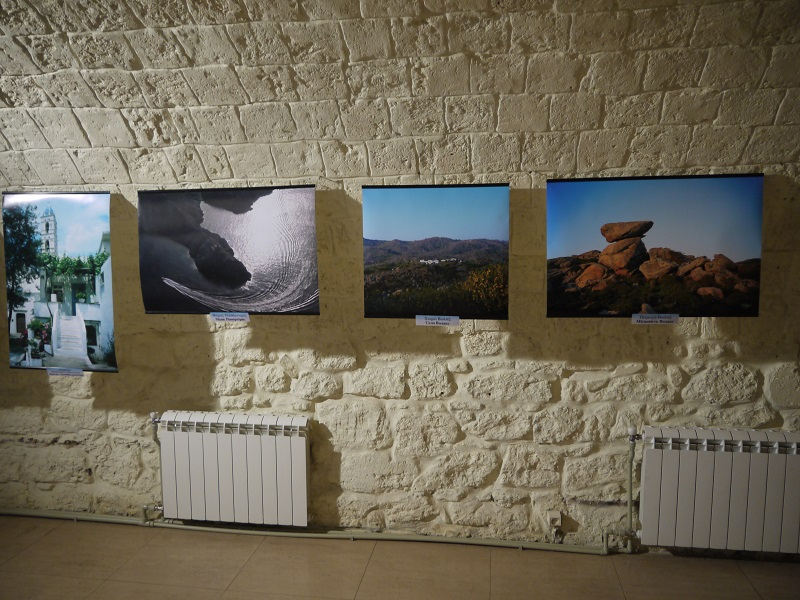
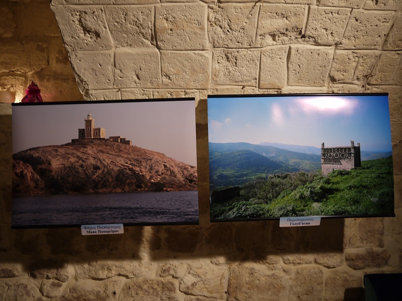
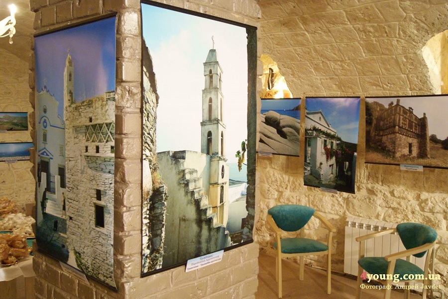
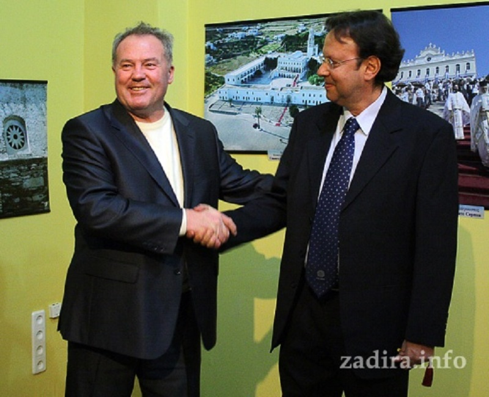
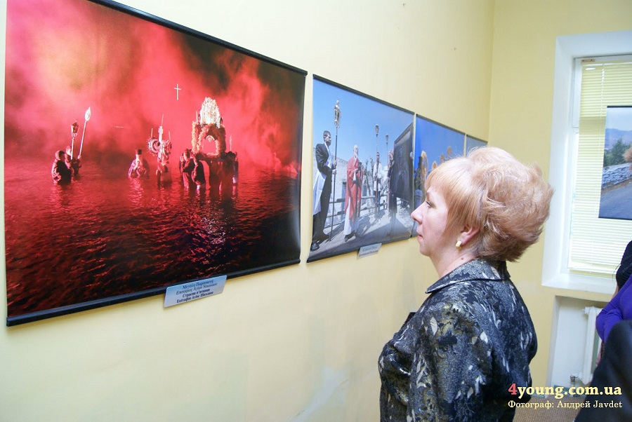
Οι φωτογραφίες που συνοδεύουν το δελτίο τύπου είναι από την έκθεση παρουσίασης της Τήνου στο Νικολάγιεφ της Ουκρανίας, τον Μάρτιο του 2012. Μαζί του ο τότε δήμαρχος του Νικολάγιεφ, Βλαντιμίρ Τσάικα. Άρθρο: «Εμποροεπαγγελματικός Σύλλογος Τήνου: Αριστείδη σ’ ευχαριστούμε…» (tinostoday.gr, 23.10.2026).
40 αντιδράσεις · 9 κοινοποιήσεις
Παναγιώτης Κροντηράς, Δήμαρχος Τήνου23 Οκτωβρίου 2026σελίδα Δήμου Τήνου · κοινοποίηση από Κατερίνα και Ευαγγελία
«Αγαπημένε μου φίλε Αριστείδη»
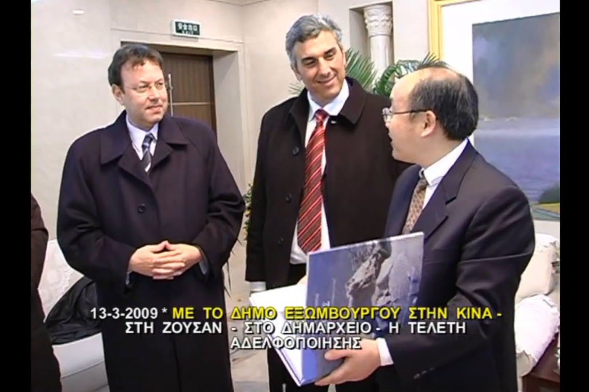
Αγαπημένε μου φίλε Αριστείδη,
Σήμερα, η Τήνος που τόσο αγάπησες και που άφησε ανεξίτηλο το αποτύπωμά της μέσα σου, είναι πιο φτωχή από την απουσία σου. Και για μένα προσωπικά, η μέρα αυτή είναι από τις πιο δύσκολες της ζωής μου, καθώς αποχαιρετώ όχι απλώς έναν κορυφαίο επιστήμονα και διεθνή καλλιτέχνη, αλλά έναν αδελφικό φίλο, έναν άνθρωπο της καρδιάς μου και ένα πιστό συνοδοιπόρο.
Θυμάμαι τις ατέλειωτες συζητήσεις μας, από την εποχή του Δήμου Εξωμβούργου μέχρι και τον σημερινό ενιαίο Δήμο Τήνου. Μοιραζόμασταν το ίδιο πάθος και το ίδιο όραμα για το νησί μας. Σε κάθε μας βήμα, είχα την τύχη να έχω δίπλα μου τη διορατικότητα, την καθαρή σου σκέψη και την ανιδιοτελή σου αγάπη για τον τόπο μας. Ήσουν ο άνθρωπος που, με το διεθνές σου κύρος ως Πρόεδρος της Παγκόσμιας Ομοσπονδίας Φωτογραφικών Φεστιβάλ, κατάφερες να ανοίξεις πόρτες που έμοιαζαν κλειστές, οδηγώντας μας μέχρι την μακρινή Κίνα, για εκείνη την ιστορική αδελφοποίηση.
Για τον κόσμο ήσουν ο Δρ. Αριστείδης Κοντογεώργης. Ο σπουδαίος καθηγητής που από το 1989 γαλούχησε γενιές στο Τμήμα Φωτογραφίας του ΤΕΙ Αθήνας. Ο δημιουργός με τις 30 ατομικές εκθέσεις παγκοσμίως, τα 24 βιβλία και τη σπουδαία προσφορά στην Ελληνική Φωτογραφική Εταιρεία.
Για μένα, όμως, ήσουν ο Αριστείδης. Ο δικός μας άνθρωπος, γεννημένος εδώ το 1960, που δεν ξέχασε ποτέ τις ρίζες του. Μέσα από τον φακό σου, αποτύπωσες την τηνιακή ψυχή, το μοναδικό φως των χωριών μας και την ομορφιά των ανθρώπων μας, αφήνοντάς μας ως παρακαταθήκη τα υπέροχα φωτογραφικά σου λευκώματα και τις μοναδικές εκδοτικές περιηγήσεις στην τότε Δημοτική Επιχείρηση του Δήμου Εξωμβούργου.
Το κενό που αφήνεις στην ακαδημαϊκή κοινότητα και στην αγαπημένη μας Τήνο είναι δυσαναπλήρωτο. Η σκέψη μας αυτή την ώρα βρίσκεται κοντά στην οικογένειά σου και την μητέρα σου, στους οποίους εκφράζω τα πιο βαθιά και ειλικρινή μου συλλυπητήρια.
Φίλε μου ακριβέ, σε ευχαριστώ για όλα. Για τη φιλία σου, για την πίστη σου, για όσα προσέφερες στον τόπο μας. Το έργο σου και η θύμησή σου δεν θα σβήσουν ποτέ.
Καλό σου ταξίδι στο αιώνιο φως.
Παναγιώτης Κροντηράς Δήμαρχος Τήνου
Δημοσιεύτηκε στη σελίδα «Δήμος Τήνου – Municipality of Tinos» και στο dimostinou.gr. Αναδημοσιεύτηκε από Tinos Today, Κυκλαδική, Tinosnews και Cyclades24.
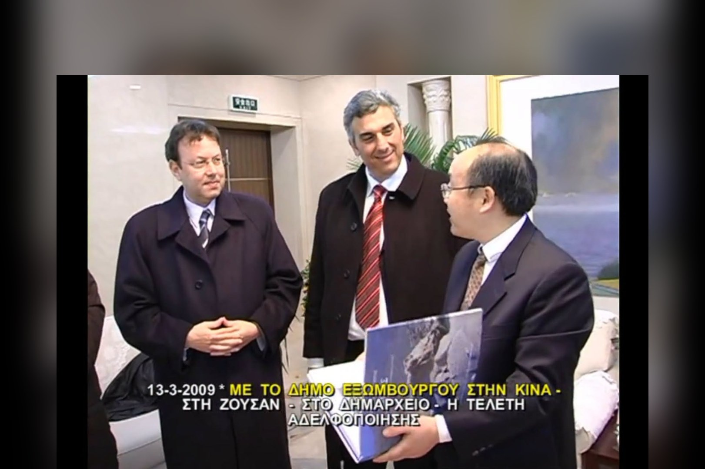
Ο δήμαρχος με τον Αριστείδη το 2009, από το άρθρο του Tinos LIVE TV.
101 αντιδράσεις · 3 κοινοποιήσεις
Μπάμπης Κουλούρας24 Οκτωβρίου 2026με Κατερίνα Κοντογεώργη και 4 ακόμη
«Σήμερα το μεσημέρι αποχαιρετάμε τον Αριστείδη Κοντογεώργη»
Βίντεο: «Η Τήνος από ψηλά», η παρουσίαση του βιβλίου στο Βυζαντινό Μουσείο Αθηνών, 6 Ιουνίου 2005 (YouTube, πατήστε για αναπαραγωγή). Ο ίδιος εμφανίζεται στο 53′54″.
Σήμερα το μεσημέρι αποχαιρετάμε τον ΑΡΙΣΤΕΙΔΗ ΚΟΝΤΟΓΕΩΡΓΗ, έναν αληθινό ευπατρίδη σε κάθε έκφανση της ζωής, έναν Τήνιο Πανεπιστημιακό Καθηγητή Καλλιτέχνη, έναν απαράμιλλο δεξιοτέχνη της φωτογραφικής τέχνης, έναν ευγενή πολίτη, έναν υπέροχο φίλο που άφησε τα πιο φωτεινά ίχνη του στο πέρασμά του από τη ζωή. Γι’ αυτό και θα εξακολουθήσει να ζει στις πιο όμορφες αναμνήσεις μας, στην πιο τρυφερή γωνιά της καρδιάς μας... Η γυναίκα του και τα παιδιά του κληρονομούν την υπερηφάνεια και τον μέγα πλούτο της πολυσήμαντης, δημιουργικής του ζωής...
15 αντιδράσεις · 1 σχόλιο
Σχόλια (1)
Έφη ΧατζήΕυχαριστούμε.
Tinos LIVE TV24 Οκτωβρίου 2026κοινοποίηση από Κατερίνα
«Σήμερα το τελευταίο αντίο στον Αριστείδη Κοντογεώργη»
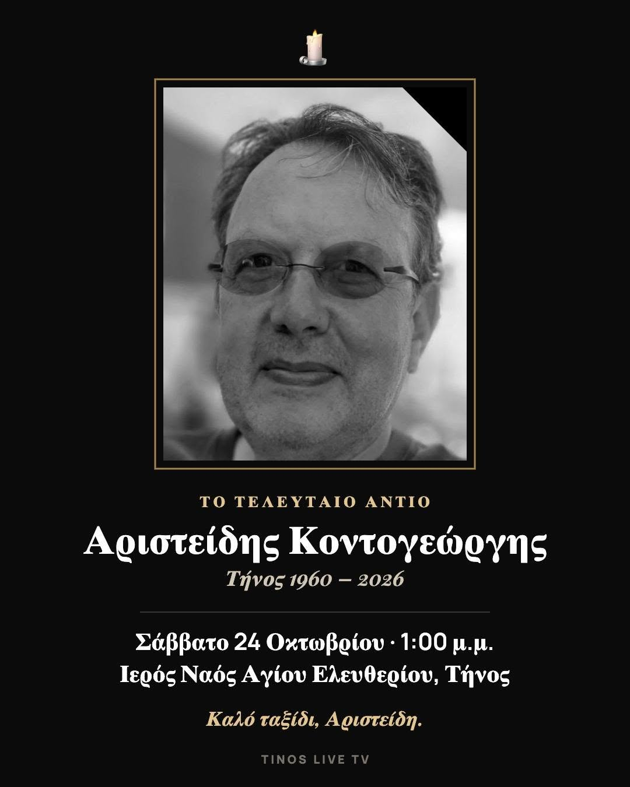
Σήμερα, Σάββατο 24 Οκτωβρίου, στη 1 το μεσημέρι, στον Ιερό Ναό Αγίου Ελευθερίου στη Χώρα, η Τήνος αποχαιρετά τον φωτογράφο και καθηγητή που έδειξε το νησί μας «από ψηλά» και μέσα από το υπέρυθρο φιλμ. Μέσα στο άρθρο η διαδρομή του και όσα γράψαμε αυτές τις μέρες.
Ας είναι ελαφρύ το χώμα που θα τον σκεπάσει. Καλό ταξίδι, Αριστείδη.
44 αντιδράσεις · 6 κοινοποιήσεις
Νατάσα Δεληγιάννη Άσπρου24 Οκτωβρίου 2026κοινοποίηση από Ευαγγελία
«Ένας τέτοιος καλλιτέχνης δεν φεύγει ποτέ από τις καρδιές μας»
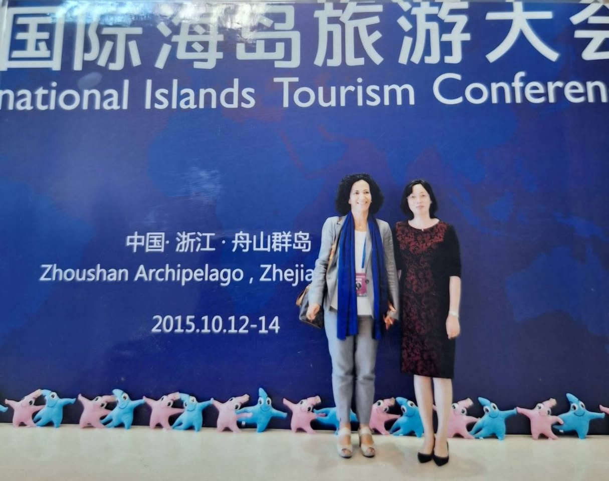
Σήμερα η Τήνος αποχαιρετά με θλίψη και βαθιά οδύνη ένα δικό της παιδί, τον Αριστείδη Κοντογεώργη, έναν καλλιτέχνη, φωτογράφο και ακαδημαϊκό που άφησε το δικό του αποτύπωμα στο νησί μας, στην Ελλάδα αλλά και σε διεθνές επίπεδο.
Τον Αριστείδη τον γνώρισα αρχικά μέσα από τα ζεστά λόγια του πατέρα μου, που μου μετέδωσε την αγάπη και την περηφάνια που ένιωθε για τον μαθητή του. Συμμαθητής με τον αδελφό μου σε εκείνη την περίφημη τάξη της γενιάς του 1960 που συνεχίζει να μετρά αβάσταχτες απώλειες!
Ο Αριστείδης άνοιξε τα δικά του φτερά και διέπρεψε και καταξιώθηκε στον τομέα του, σε εθνικό και διεθνές επίπεδο, αλλά πάντα δεν έπαψε να έχει στην καρδιά του τη γενέτειρα και τον τόπο καταγωγής του, την Τήνο, που κουβαλούσε σε όλες τις εκφάνσεις της ζωής του.
Αθεράπευτα Τηνιακός λοιπόν, καθήλωνε με τον φακό του, εκτός των άλλων, σκηνές του Τηνιακού τοπίου που μαγνήτιζαν το κοινό και προκαλούσαν έντονα συναισθήματα και δημιουργούσαν συγκλονιστικές εικόνες. Οι λήψεις του ήταν τόσο δυνατές, δημιουργικές και αποκαλυπτικές που τραβούσαν το βλέμμα και την προσοχή του θεατή. Αποτύπωνε την αλήθεια και την ομορφιά της στιγμής και μετέφερε στον θεατή τα δικά του συναισθήματα για τον τόπο του.
Κάπως έτσι λοιπόν μας δόθηκε η ευκαιρία να γνωριστούμε καλύτερα και να συνεργαστούμε στο διάστημα 2014 με 2019 που ήμουν Αντιδήμαρχος Τουρισμού στον Δήμο της Τήνου. Ήταν πάντα μέσα σε αυτούς που πρόσφεραν ανιδιοτελώς φωτογραφίες για την τουριστική προβολή του νησιού μας, και κάπως έτσι ήρθε η πρόταση να οργανώσουμε μια φωτογραφική έκθεση στα νησιά Ζουσάν, στο αρχιπέλαγος της Κίνας, το 2015. Εκτός της φωτογραφικής έκθεσης, είχε φροντίσει ώστε η Τήνος να είναι τιμώμενος προορισμός στο Παγκόσμιο τουριστικό συνέδριο που γινόταν εκείνο το διάστημα στην Κίνα.
Οι δυσκολίες ήταν πολλές, αλλά εκείνος τις ξεπέρασε και καταφέραμε να κάνουμε μια μοναδική συμμετοχή και μια έκθεση που μετέφερε τόσο μακριά τις ομορφιές του τόπου μας. Εκεί μου δόθηκε η ευκαιρία να γνωρίσω έναν άλλον Αριστείδη, έναν Αριστείδη που έκρυβε επιμελώς, εξαιτίας της σεμνότητάς του, καταξιωμένο σε διεθνές επίπεδο.
Θα θυμάμαι πάντα αυτή τη δράση που κάναμε μαζί, που με συγκλόνισε σαν άνθρωπο και ήταν για μένα μια μοναδική εμπειρία. Θα θυμάμαι όμως και την περηφάνια του, όχι για αυτά τα ίδια τα έργα του, αλλά για την προβολή της κάθε ομορφιάς του τόπου του.
Ένας τέτοιος καλλιτέχνης δεν φεύγει ποτέ από τις καρδιές μας, γιατί τα έργα του και οι εικόνες του παραμένουν μέσα στη σιωπή τους να μιλάνε για αυτόν.
Καλό ταξίδι στο φως Αριστείδη, στον Τηνιακό ορίζοντα που τον λάτρεψες, και εύχομαι δύναμη και παρηγοριά στην κα Ευαγγελία, στην Ελένη, στα κορίτσια σου, στην αδελφή σου και σε όσους σε αγάπησαν και αγάπησες.
Το κείμενο αναδημοσίευσε και το Tinos LIVE TV («Καλό ταξίδι στο φως», 24.10.2026).
113 αντιδράσεις · 4 σχόλια · 5 κοινοποιήσεις
Σχόλια (3)
Στέλλα ΓκίζηΑβάσταχτα λυπηρό, χάθηκαν τόσο πρόωρα τόσοι παλιοί συμμαθητές, φίλοι των παιδικών μας χρόνων. Αιωνία η μνήμη!
Chris ChristodoulouΑιωνία του η μνήμη!
Μαρουδιά ΚατερίναΑιώνια του η μνήμη, καλό παράδεισο.
Ευαγγελία και Κατερίνα Κοντογεώργη22 και 25 Οκτωβρίου 2026
Με τον μπαμπά τους, στις ορκωμοσίες τους
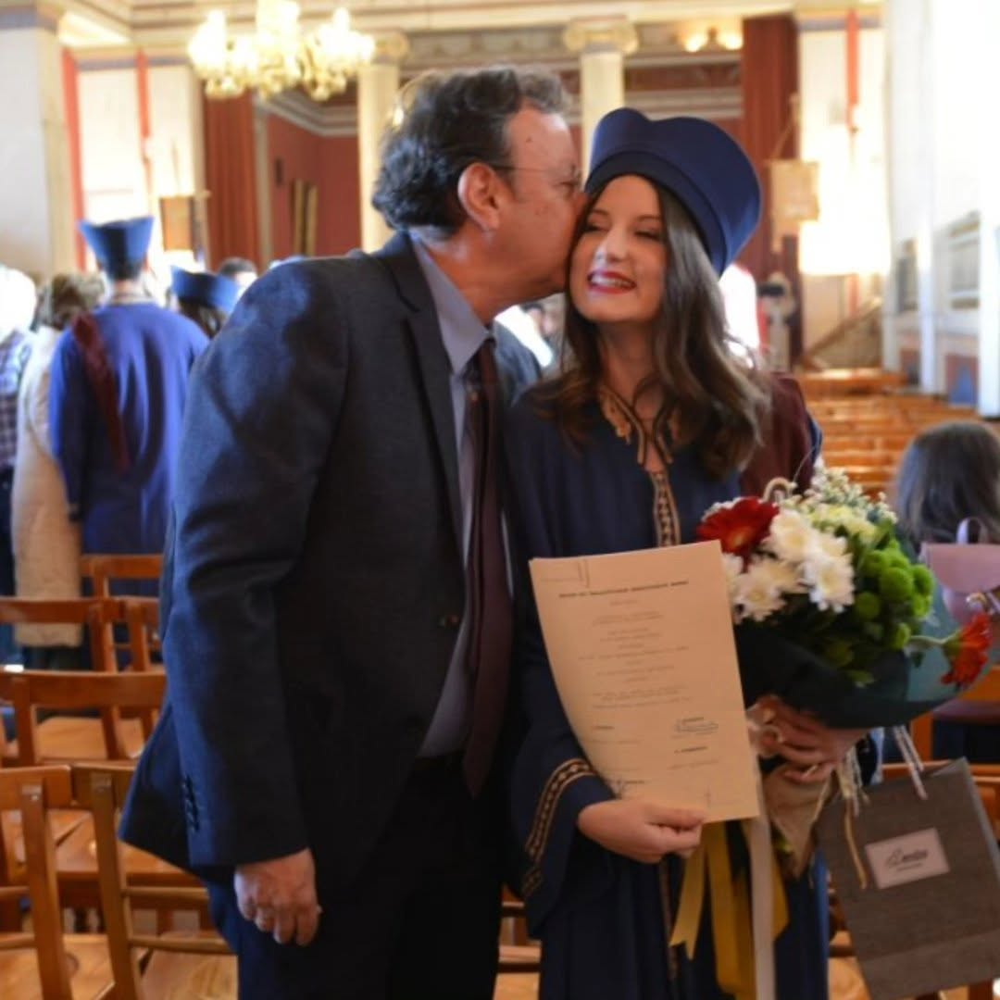
Ευαγγελία · νέα φωτογραφία προφίλ, 22.10
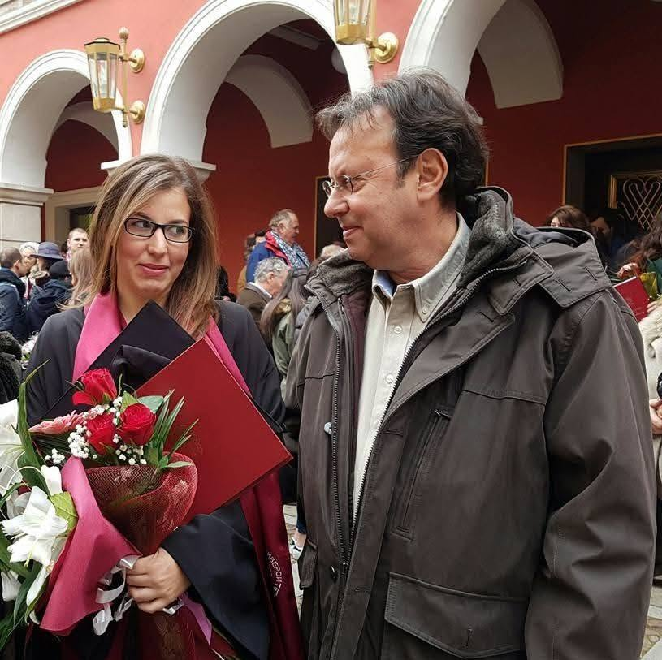
Κατερίνα · 25.10
Οι δύο κόρες του ανέβασαν από μία φωτογραφία με τον πατέρα τους, χωρίς λόγια.
Marie Devereux CurranHe was so proud of you. (Ήταν τόσο περήφανος για σένα.)
Babis KoulourasΕίναι πολύτιμος θησαυρός να έχετε τον Αριστείδη πατέρα. Κι εμείς φίλο!!!
Σχόλια στις κοινοποιήσεις της Ευαγγελίας20–24 Οκτωβρίου 2026
Συλλυπητήρια προς την Ευαγγελία
Κάτω από τις αναρτήσεις που κοινοποίησε η Ευαγγελία στο προφίλ της, φίλοι της άφησαν τα δικά τους μηνύματα. Στην κοινοποίηση του Tinos Today (73 αντιδράσεις, 30 σχόλια):
Σχόλια (30)
Lefteris ZemelisΣυλλυπητήρια...
Xrisina PasxalidouΕιλικρινά, θερμά συλλυπητήρια.
Tony TsakosΤα θερμά συλλυπητήριά μου.
Litsa StaurouΚοριτσάκι μου, θερμά συλλυπητήρια! Να ζήσετε να τον θυμόσαστε.
Kiki VarvarigouΘερμά συλλυπητήρια, πολύ στενοχωρέθηκα.
Θοδωρής ΣπίνοςΣυλλυπητήρια!!
Vaso IakovakiΘερμά συλλυπητήρια Ευαγγελία μου!! Πραγματικά λυπάμαι! Να είστε πάντα καλά να τον θυμάστε με αγάπη!! Πραγματικά πολύ κρίμα….
Giannis PapapanagiotouΘερμά συλλυπητήρια!
Stefania NtovaΕιλικρινά λυπάμαι πολύ Ευαγγελία μου... Τα θερμά μου συλλυπητήρια! Να ζήσετε να τον θυμόσαστε.... Καλό ταξίδι να έχει...
Katia Domali KaratziaΑγαπημένη μου, καλό του ταξίδι….
Chrysanthi SarantinouΣυλλυπητήρια Ευαγγελία.
Μελίνα ΚλήμηΘερμά συλλυπητήρια!!
Anna PanΕυαγγελία μου, τα ειλικρινή συλλυπητήριά μου. Να είστε καλά να τον θυμάστε και η ευχή του να σας συνοδεύει στη ζωή σας. Κουράγιο και δύναμη σε όλους σας.
Κατερίνα ΓούναρηΕυαγγελία μου γλυκιά, συλλυπητήρια για την απώλεια του μπαμπά σας! Ένας αξιόλογος άνθρωπος με αξιοπρέπεια, γεμάτος ευγένεια! Να είστε γερές να τον θυμόσαστε πάντα!
Evi BkaΕυαγγελία μου, συλλυπητήρια, λυπάμαι πολύ, να είστε πάντα καλά να τον θυμόσαστε.
Stamatis KozakisΣυλλυπητήρια Ευαγγελία!
Apostolis FoukasΘερμά συλλυπητήρια!!
Vicky SkandalouΘερμά συλλυπητήρια.
Nikos DelisΘερμά συλλυπητήρια.
Τζούλια ΕυστρατίουΚαλό πέρασμα στο φως να έχει, κορίτσι μου, καλή δύναμη!!!
Katerina KalogerakiΤα ειλικρινή μου συλλυπητήρια κορίτσι μου! Να έχετε την ευχή του!
Eleni IliadiΘερμά συλλυπητήρια Ευαγγελία μου! Καλό του ταξίδι.
Elena AngelopoulouΤα θερμά μου συλλυπητήρια....
Στις υπόλοιπες κοινοποιήσεις της: Αγνή Δεσύπρη (Tinos LIVE TV): «Συλλυπητήρια κορίτσι μου. Η αγάπη του να σας ακολουθεί πάντα.» · Eva Pantazatou (Θέμης Ροδαμίτης): «Συλλυπητήρια Ευαγγελία! Ο Θεός να αναπαύσει την ψυχή του!» · Marialena Margaroni (Χρήστος Πιπίνης): «Λυπάμαι ειλικρινά.... στέλνω μια μεγάλη αγκαλιά....»
Σχόλια στις κοινοποιήσεις της Κατερίνας20–24 Οκτωβρίου 2026
Συλλυπητήρια προς την Κατερίνα
Στην κοινοποίηση της ανάρτησης της Ευαγγελίας από την Κατερίνα (90 αντιδράσεις, 23 σχόλια):
Σχόλια (23)
Eleni PetridouΒάλσαμο στον πόνο όλων μας.
Margarita KolydaΤα θερμά μου συλλυπητήρια.
Giwrgos XalavatzisΤα θερμά μου συλλυπητήρια, να είστε καλά να τον θυμάστε.
Faethon GryparisΘερμά συλλυπητήρια! Μας συγκλόνισε όλους το απρόσμενο.
Maria TriantafillidouΚοριτσάκια μου, Κατερίνα μου, απευθύνομαι περισσότερο σε σένα γιατί σε γνώρισα και σε έζησα περισσότερο μέσω της κόρης μου, και σε εκτίμησα τόσο πολύ και σε αγάπησα εξίσου, και σίγουρα ο χαρακτήρας σου και η καλοσύνη σου οφείλεται σε όλα αυτά που πήρατε απλόχερα απ’ τους γονείς. Εύχομαι ολόψυχα και στις δύο σας και στη μαμά σας να σας δίνει δύναμη ο Θεός και κουράγιο, να περάσει γρήγορα ο χρόνος και η πληγή που αιμορραγεί τώρα να μείνει ένα σημάδι στην ψυχή, τόσο ώστε να μπορείτε να μιλάτε για τον μπαμπά σας χωρίς να κλαίτε και να θυμάστε όλες τις ευτυχισμένες στιγμές μαζί του… Καλό παράδεισο να έχει…
Aggeliki GianniouΣυλλυπητήρια!! Καλό παράδεισο να έχει ο πατερούλης σου!! Να είσαι καλά να τον θυμάσαι!! Το φως της ψυχής του θα σε φωτίζει πάντα, αστέρι μου!
Θεοδώρα ΠίππουΣυλλυπητήρια κοριτσάκι μου, να είστε καλά να τον θυμάστε.
Tina MavromaraΜας συγκίνησες βαθιά Βαγγελίτσα μου με τα λόγια αγάπης που ζωγράφιζαν την αληθινή φιγούρα του αγαπημένου μας Αριστείδη. Η δύναμη και η αγάπη του να σας συνοδεύει πάντα. Καλή δύναμη και σε εσάς και στη μαμά. Αντίο αδερφικέ μου φίλε, διαμάντι της παρέας και της νιότης μας, που μοιραστήκαμε μαζί λύπες, αγωνίες, γλέντια και χαρές… Καλό σου ταξίδι..
Aristides PapadomichelakisΤα ειλικρινή μου συλλυπητήρια, να είστε πάντα καλά να τον θυμάστε.
Polina XanthakiΘερμά συλλυπητήρια κορίτσι μου!
Αγγελική ΜαϊδιώτουΘερμά συλλυπητήρια κορίτσι μου!
Γεω Δέσποινα ΝικολαΐδουΘερμά συλλυπητήρια.
Nikos VarsamidakisΘα ζει αιώνια στη μνήμη όσων τον γνώρισαν από κοντά ή από μακριά και τον αγάπησαν και τον εκτίμησαν. Συλλυπητήρια.
Μαρία ΑμοιραλήΤα ειλικρινή μου συλλυπητήρια για τον αγαπημένο σας πατέρα!! Εύχομαι η ευχή του να σας συνοδεύει σε όλη τη ζωή σας!! Αυτός ήταν ο Αριστείδης... όπως πολύ παραστατικά περιέγραψες, Ευαγγελία. Βρίσκεται τώρα στην αγκαλιά του δημιουργού μας κι από εκεί θα συνεχίσει να σας προστατεύει... Μια μεγάλη αγκαλιά στη μαμά, στην Κατερίνα και σε σένα!! Ο αγαπημένος μου συμμαθητής θα ζει στην καρδιά μας για πάντα!! Καλό σου ταξίδι Αριστείδη.
Eleni ManousouΤα θερμά μου συλλυπητήρια!!!
Mairi VlachouΤα θερμά μου συλλυπητήρια Κατερίνα, να τον θυμάστε πάντα με αγάπη.
Ειρήνη ΔαλεζίουΘερμά συλλυπητήρια.
Aspasia AlexandriΣυλλυπητήρια. Καλό παράδεισο να έχει!
Elena HasanllariΘερμά συλλυπητήρια Κατερίνα μου.
Eftixios GadΘΕΡΜΑ ΣΥΛΛΥΠΗΤΗΡΙΑ.
Vaso TheocharopoulouΘερμά συλλυπητήρια Κατερίνα μου. Κουράγιο και δύναμη.
Στις υπόλοιπες κοινοποιήσεις της: Eleni Manousou (αγγελία Tinos LIVE TV): «Συλλυπητήρια Κατερίνα!!» · Genovefa Sigizi (Αδελφότητα, μέσω Tinos Today): «Συλλυπητήρια, κουράγιο.» · Stella Asimakopoulou (βίντεο Tinos LIVE TV): «Συλλυπητήρια.» · Χριστίνα Παππά έγραψε στο προφίλ της: «Συλλυπητήρια!!!»
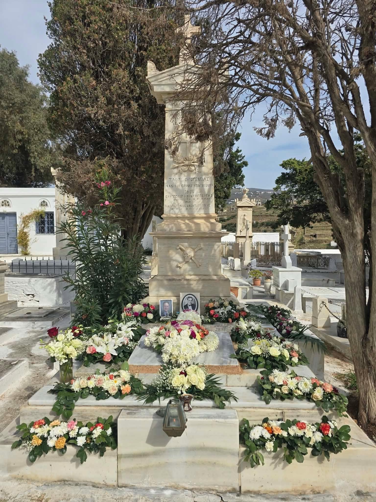
Ο οικογενειακός τάφος στην Τήνο, μετά την εξόδιο ακολουθία της 24ης Οκτωβρίου 2026.
Σχόλια (19)